Preface
Machine learning used to be taught as if the learner lived alone inside a notebook.
You found a course. You read the textbook. You copied the code. You got stuck. You searched for help. You returned to the notebook and hoped the next attempt would finally make things clear.
That model created many strong practitioners, but it also hid an unnecessary cost: too much of learning depended on luck, persistence, and tolerance for confusion. A student who found the right explanation at the right time moved forward. Another equally capable student might stall for weeks.
That is no longer the environment we live in.
Today, a learner can ask an AI system to explain a concept at three levels, generate a practice dataset, critique an experiment plan, propose a debugging sequence, compare model choices, and simulate the objections of a skeptical reviewer. In modern engineering work, the same learner may also have access to retrieval systems, project memory, reusable skills, automated checks, and execution harnesses that turn vague intent into structured work.
This is not a minor upgrade to education. It is a structural change.
The scarce resource is no longer access to information. The scarce resource is the ability to build a reliable working environment around yourself.
That is what this book is about.
Beyond Prompting
There is a common misunderstanding in AI-assisted work. People talk about prompting as if the future belongs to those who can write clever instructions quickly.
Prompting matters, but it is too small a frame.
A prompt is a single request.
A workflow is a repeated sequence of steps.
A skill is a packaged workflow that can be reused.
Harness engineering is the next level up: it is the design of the whole environment so that a person and an AI system can work together reliably under real constraints.
A harness may include:
- instructions
- tools
- files
- evaluation rules
- review checkpoints
- memory
- templates
- failure handling
- output expectations
That is the lens of this book. Machine learning is not only about models. It is also about the systems around models, and increasingly, the systems around the humans building those systems.
Why This Matters for Machine Learning
Machine learning is a perfect field for this shift because the field already demands structured thinking.
To do good ML work, you must ask:
- what problem are we solving
- what data defines the problem
- what baseline should we compare against
- what metric actually matters
- what failure modes are likely
- what evidence would change our mind
- what risk is acceptable in deployment
Those questions do not disappear when AI arrives. They become more important.
A fast assistant can generate code, plots, explanations, and confident recommendations. That speed is useful. It is also dangerous. If the surrounding harness is weak, the learner can become more productive at moving in the wrong direction.
The future therefore belongs not to the person who uses AI most casually, but to the person who can shape AI into a reliable collaborator.
The Main Claim of This Book
This book makes a strong claim:
The future machine learning professional is not only someone who can train models.
It is someone who can build reliable human-AI working systems around models.
That means we will study the familiar core:
- mathematical intuition
- classical machine learning
- deep learning
- evaluation
- data systems
- deployment
- safety
But we will also study a newer professional capability:
- how to design skills and harnesses for learning, debugging, evaluation, experimentation, and production work
In other words, this book is both a machine learning course and a course in how to learn and practice machine learning in the harness era.
Who This Book Is For
If you are a beginner, this book will help you build structure around your learning so that confusion does not become drift.
If you already build ML projects, this book will help you turn scattered habits into reliable systems.
If you are an engineer moving toward production ML, this book will help you connect models to the broader realities of data, deployment, monitoring, and human review.
If you are advanced, the book offers a stronger conceptual frame for where the profession is going: toward reusable skills, evaluation infrastructure, and team-level harness design.
A New Definition of Mastery
Old educational systems often treated mastery as solitary correctness. Can you produce the answer yourself?
That is no longer enough.
Modern mastery looks more like this:
- you can explain the concept
- you can build the baseline
- you can design the evaluation
- you can diagnose failure
- you can create reusable workflows
- you can document tradeoffs
- you can improve the surrounding harness over time
This is a harder definition of mastery, not a softer one. It does not excuse the learner from rigor. It increases the demand for rigor because the tools are now powerful enough to hide shallow understanding behind polished output.
Five Bold Bets
This book makes five bets about the next decade.
First, the best technical education will become adaptive, memory-rich, and conversational.
Second, skills will become part of mainstream educational infrastructure. Learners will maintain libraries of reusable study and engineering skills the way programmers maintain libraries of reusable code.
Third, portfolios will increasingly show not just final artifacts, but the harness behind them: the checks, evals, retrospectives, and design decisions that made the work trustworthy.
Fourth, the line between learner and engineer will blur. A strong chapter exercise, if wrapped in the right harness, can already resemble professional work.
Fifth, one of the most valuable emerging capabilities in technical work will be harness engineering: the ability to turn good judgment into repeatable systems that help humans and AI collaborate well.
How to Use This Book
Do not read it only as a sequence of facts.
Read it as an invitation to build your own machine learning operating system.
If you want the practical workflow for the repository’s real local skills, start with How to Use Reader Skills with This Book and then keep Appendix B. Reader Skill Catalog open beside the chapter you are studying.
For each chapter, try to leave with four things:
- A clearer mental model.
- A small working artifact.
- A reusable skill or harness.
- A note about what failed or still feels uncertain.
That pattern matters because progress in modern ML does not come only from covering material. It comes from compounding reusable structure.
What I Hope You Become
By the end of this book, I do not only want you to say, “I know machine learning.”
I want you to be able to say:
- I can learn new ML topics quickly and rigorously.
- I can build systems, not just isolated notebooks.
- I can use AI without outsourcing my judgment.
- I can turn fragile success into reusable process.
- I can design harnesses that help both me and my teammates work better.
That is the confidence I want for you. Not the confidence of surface fluency, but the confidence that survives changing models, changing tooling, and changing roles.
Let us begin there.
How to Use Reader Skills with This Book
This book is not designed to be read only as a sequence of explanations.
It is designed to be used with reusable reader skills.
The core loop is simple:
- Read the chapter until you can state the main judgment in your own words.
- Choose the matching reader skill from Appendix B. Reader Skill Catalog.
- Run that skill on the chapter case, the runnable example, or one of your own problems.
- Compare the skill output with your own reasoning instead of accepting it blindly.
- Save the result as a memo, checklist, or review note that you can reuse later.
That is how the book turns chapter reading into a repeatable learning system.
If You Are Using Codex
Inside a Codex-style environment, the reader skills in this repository can be invoked directly with $skill-name.
The normal pattern is:
- Open the chapter.
- Open the corresponding in-book skill page.
- Invoke the skill with the chapter case or with your own real task.
- Ask the skill to produce a judgment artifact, not only a short answer.
- Compare that artifact with your own reasoning and revise it.
For example:
Use $ml-baseline-builder to review a delivery-time prediction task. Include the naive baseline, the first interpretable baseline, the shared metric, critical slices, and whether a more complex model is justified yet.
The source skill files live under .agents/skills/ in the repository, so readers can inspect the actual reusable workflow behind each skill.
If You Are Not Using Codex
You can still use the skills.
Each reader-skill page and each Appendix B entry includes a copyable “Try It Now” scaffold. Treat that scaffold as a structured prompt template.
The workflow is:
- Copy the chapter’s skill scaffold.
- Replace the example task with your own case.
- Ask for a structured output such as a memo, review sheet, experiment plan, or checklist.
- Compare the result with your own analysis.
- Keep the parts that improved your judgment and rewrite the rest in your own words.
The point is not the product name of the tool.
The point is learning to reuse a disciplined thinking pattern.
What To Save After Each Skill Run
After each run, save a small artifact with:
- the original task or case
- the skill you used
- the output you accepted
- the output you rejected or revised
- the next experiment or follow-up question
This turns AI help into accumulated engineering judgment instead of disposable chat history.
Best Inputs For Reader Skills
Reader skills work best when you give them one of the following:
- a concrete equation
- a small dataset description
- a model comparison result
- a failure symptom
- a deployment plan
- a risk scenario
- a portfolio or growth snapshot
Vague requests are still possible, but the strongest results usually come from real chapter artifacts, real metrics, or real project notes.
Chapter-To-Skill Map
| Chapter | Best Reader Skill |
|---|---|
| Chapter 2 | ml-math-translator |
| Chapter 3 | ml-problem-framer |
| Chapter 4 | ml-baseline-builder |
| Chapter 5 | ml-tabular-model-review |
| Chapter 6 | ml-evaluation-review |
| Chapter 7 | ml-training-diagnostics |
| Chapter 8 | ml-neural-project |
| Chapter 9 | ml-architecture-reader |
| Chapter 10 | ml-adaptation-decision |
| Chapter 11 | ml-retrieval-evaluation |
| Chapter 12 | ml-ranking-review |
| Chapter 13 | ml-data-readiness |
| Chapter 14 | ml-launch-readiness |
| Chapter 15 | ml-risk-review |
| Chapter 16 | ml-professional-growth |
Chapter 1 is different: it explains why this entire skill-and-harness approach matters in the first place. Use it to choose your first skill and start the habit.
A Strong Default Workflow
If you want one repeatable habit for the whole book, use this:
- Read the chapter summary.
- Run the chapter’s extension exercise or a matching example from Appendix C. Runnable Example Cases.
- Invoke the matching reader skill.
- Write a one-page memo in your own words.
- Save that memo beside your notes or project files.
That workflow is the practical form of the book’s main claim:
learning should leave behind reusable systems, not only memories.
Chapter 1. Learn Machine Learning Through Harness Engineering
Machine learning is no longer difficult for the same reasons it was difficult before.
The old bottleneck was access. Good books were rare. Good explanations were scattered. Debugging help depended on luck, mentors, or endurance. A student could spend days blocked by one misunderstood concept.
The new bottleneck is different.
Now we can generate explanations, code, examples, tests, and study plans almost instantly. What is scarce is not output. What is scarce is a reliable structure for using that output well.
That is why this chapter begins with a claim that may sound unusual in a machine learning book:
If you want to become strong at machine learning in the coming decade, you must learn not only models and math, but also harness engineering.
Harness engineering is the craft of designing the environment in which a human and an AI system can work together reliably. It is the difference between asking for help and building a repeatable system for getting good help.
This chapter will show why that distinction matters.
1.1 From Prompts to Harnesses
The simplest unit of AI-assisted work is the prompt.
You ask:
Explain gradient descent simply.
That can be useful. But it is fragile. If the answer is shallow, or too abstract, or slightly wrong, there is no structure around the interaction to catch the problem.
The next level is the workflow.
Now you repeat a sequence:
- Ask for an explanation.
- Ask for an example.
- Ask for a counterexample.
- Summarize in your own words.
- Ask for critique.
That is already better because it contains a loop.
The next level is the skill.
A skill packages the workflow so it can be reused. Instead of rebuilding the sequence every time, you define a stable operating pattern. In a Codex-style environment, a skill is not just a nice prompt. It can carry:
- instructions
- references
- constraints
- tools
- expected outputs
- execution rules
Then comes the most powerful level: the harness.
A harness is the larger system that makes the skill dependable in practice. A harness can include:
- a folder structure
- files that hold memory
- evaluation checkpoints
- templates
- failure logs
- tool access
- testing rules
- review gates
- role boundaries
This progression matters:
- prompting asks once
- workflows repeat
- skills package
- harnesses make the package reliable
That is the core vocabulary of this book.
1.2 Why Machine Learning Needs This Frame
Machine learning is already a field of loops:
- train and evaluate
- inspect and revise
- deploy and monitor
- fail and improve
So harness engineering is not an artificial add-on. It is a natural extension of how good ML work already functions.
Think about the difference between two learners.
The first learner uses AI casually:
- explain the concept
- generate some code
- fix the error
- move on
The second learner builds a learning harness:
- ask for explanation at three levels
- require one counterexample
- build a tiny implementation
- record one prediction before running it
- compare the result with a baseline
- ask the AI to critique the reasoning
- store the mistake in a learning log
The second learner is not simply working harder. They are building compounding structure. That structure becomes a long-term advantage.
1.3 The Main Risk: Shallow Fluency
AI creates a new kind of educational danger.
In the old world, students often failed because they could not move fast enough.
In the new world, students may fail because they move too fast through convincing output.
This is shallow fluency:
- you recognize the explanation
- you accept the code
- you trust the metric
- you feel progress
- but you have not actually built judgment
Shallow fluency is especially dangerous in ML because the field already contains many easy ways to fool yourself:
- leakage
- spurious correlation
- misleading metrics
- weak baselines
- hidden assumptions in labels
- brittle gains from over-tuning
If the harness around your work is weak, AI can accelerate all of those mistakes.
So our rule for the rest of the book is simple:
Use AI for speed, variation, scaffolding, and critique.
Do not let it replace:
- verification
- evaluation
- comparison
- reflection
- responsibility
1.4 What a Beginner Harness Looks Like
A beginner does not need a giant system. A good beginner harness can be surprisingly small.
Here is a simple version.
Component 1. Concept Capture
Keep one place for:
- unclear ideas
- useful explanations
- recurring confusions
- mistakes that keep repeating
This can be a Markdown folder. The point is not beauty. The point is continuity.
Component 2. Build Loop
Every topic should produce a tiny artifact:
- a notebook
- a script
- a chart
- a one-page explanation
If nothing is built, understanding often remains abstract.
Component 3. Critique Loop
After each artifact, run a structured review:
- what is unclear
- what assumption is hidden
- what evidence is missing
- what would fail in a slightly different setting
This is where AI can be extremely valuable.
Component 4. Evidence Log
Record:
- what you tried
- what worked
- what failed
- what changed your mind
The evidence log is one of the simplest ways to stop passive study from evaporating.
Component 5. Reuse Layer
When a workflow helps, package it.
For example:
- a math explainer skill
- a debugging skill
- an evaluation review skill
- a study planner skill
This is the point where learning starts to become harness engineering.
1.5 Skills as Learning Machines
Let us sharpen the word skill because this is where misunderstanding often appears.
In casual AI usage, people sometimes call any saved prompt a skill.
That definition is too weak for this book.
A serious skill is closer to a small machine for repeatable thinking. It can encode:
- what problem it is for
- what context to load
- what tools are allowed
- what form the answer should take
- what checks must happen before completion
That is why Codex-style skills are such a useful example. They do not merely say “be helpful.” They shape behavior under a task boundary.
Here are a few example learning skills.
The Math Translator Skill
Input:
- a concept like gradients or eigenvectors
Output:
- beginner explanation
- exact mathematical statement
- engineering interpretation
- one worked example
- one common misconception
Check:
- force one counterexample or edge case
The Baseline Builder Skill
Input:
- dataset description
- target definition
Output:
- simplest reasonable baseline
- justification
- evaluation plan
- likely failure modes
Check:
- explain why a more complex model is not yet justified
The Experiment Reviewer Skill
Input:
- proposed experiment
- chosen metrics
- expected improvement
Output:
- missing assumptions
- hidden confounders
- weak evidence
- next diagnostic steps
Check:
- require at least one argument against the current plan
The Chapter Study Skill
Input:
- current chapter
- learner level
- available time
Output:
- study sequence
- build goal
- reflection question
- evidence artifact to produce
Check:
- make the learner explain something before moving on
Notice what is happening here. We are not merely using AI. We are building learning machines.
1.6 The Four-Level Growth Path
The book follows a four-level ladder, but now we can define it more precisely.
Stage 1. Learner
Focus:
- concepts
- baselines
- intuition
- basic coding
Harness goal:
- learn to use a small personal study harness consistently
Main danger:
- relying on AI output without building independent understanding
Stage 2. Builder
Focus:
- projects
- evaluation
- debugging
- stronger implementation habits
Harness goal:
- adapt and compose existing skills for repeated project work
Main danger:
- building many artifacts without reusing any process
Stage 3. Engineer
Focus:
- data pipelines
- monitoring
- deployment
- team review
- reproducibility
Harness goal:
- design reliable evaluation, debugging, and delivery harnesses
Main danger:
- optimizing the model while the surrounding system remains brittle
Stage 4. Harness Designer
Focus:
- abstraction
- specialization
- system design
- workflow design
- team leverage
Harness goal:
- create new skills, protocols, benchmarks, and reusable engineering systems
Main danger:
- treating harnesses as bureaucracy instead of leverage
This final stage is one of the book’s most important bets: the future professional is not only a model builder, but a designer of reliable working systems.
1.7 Build a Personal ML Operating System
To make the idea practical, let us define a minimal personal ML operating system.
It should answer five questions.
1. Where do I store uncertainty?
You need a place for unresolved questions, half-formed intuitions, and recurring confusion.
2. Where do I store evidence?
You need experiments, notes, comparisons, and failures that can be revisited later.
3. How do I review myself?
You need a repeatable critique pattern so progress is not judged by vibes alone.
4. What do I reuse?
You need to notice when a good workflow deserves to become a skill.
5. How do I know I am improving?
You need visible proof:
- clearer explanations
- stronger baselines
- better error analysis
- cleaner experiments
- more reliable project structure
Without visible proof, learning becomes emotionally noisy and hard to steer.
1.8 Harness Lab: Build Your First Study Harness
Before moving to Chapter 2, build a very small harness.
Step 1. Pick a topic
For example:
- train versus validation versus test
- overfitting
- linear regression
Step 2. Define the workflow
Use this sequence:
- Ask for a simple explanation.
- Ask for a more formal explanation.
- Ask for a counterexample.
- Write your own explanation.
- Ask for critique.
- Build a tiny artifact.
- Record one mistake and one open question.
Step 3. Package it
Do not leave it as a loose interaction. Write it down as a reusable skill in your own notes.
The packaging should include:
- purpose
- inputs
- outputs
- checks
- stopping condition
Step 4. Inspect the result
Ask:
- where was the harness useful
- where was it still weak
- what should be added next time
This is the first exercise in harness engineering.
1.9 Five Predictions for the Next Decade
Here are the predictions that guide the rest of this book.
Prediction 1
The best learners will maintain personal skill libraries, not just notes.
Prediction 2
Top educational systems will combine content, memory, critique, and evaluation in one environment.
Prediction 3
Professional interviews will increasingly care whether you can reason with AI responsibly, not whether you pretend AI does not exist.
Prediction 4
Project trustworthiness will depend as much on the harness around the system as on the model inside it.
Prediction 5
Harness engineering will become part of what distinguishes senior technical people from merely fast ones.
These predictions are not separate from machine learning. They are already reshaping how ML is learned and practiced.
1.10 Common Failure Modes
Failure Mode 1. Prompt Drift
You ask many smart-sounding questions, but you never stabilize a good process into a reusable skill.
Fix:
- package repeated wins into a named workflow
Failure Mode 2. Copy-Paste Competence
You can assemble code and explanations, but you cannot defend the reasoning.
Fix:
- predict behavior before running the code and compare afterward
Failure Mode 3. Harness Theater
You build elaborate templates and checklists that do not actually improve decisions.
Fix:
- keep only the parts of a harness that change outcomes or reduce failure
Failure Mode 4. Benchmark Vanity
You celebrate metrics without understanding the split, baseline, or operational meaning.
Fix:
- require metric, comparison, and limitation together in every result summary
Failure Mode 5. Tool Worship
You confuse access to powerful tools with the possession of strong judgment.
Fix:
- keep asking what evidence would show the current result is wrong
Chapter Summary
Machine learning in the AI era should be learned through harness engineering. The important progression is from prompt to workflow to skill to harness. A strong learner does not only gather explanations and code. They build a personal operating system with memory, critique, evidence, reuse, and checks. This same habit scales from beginner study all the way to professional ML engineering.
Extension Exercises
- Write down one learning workflow you already use and identify which parts are prompt, workflow, skill, and harness.
- Build a simple study skill for one beginner topic and test it twice.
- Create an evidence log with three headings: prediction, result, revision.
- Choose one small ML project and describe the harness around it, not only the model inside it.
Further Reading
Chapter 2. Math Without Losing Courage
The first time many people decide that machine learning is “not for them” is not when they fail to code a model. It is when they open a page of notation and feel the floor disappear.
They see symbols like:
$$ \hat{y} = Xw + b $$
or
$$ w \leftarrow w - \eta \nabla_w L $$
and conclude that the real subject is happening somewhere above their head.
That conclusion is understandable. It is also wrong.
The mathematics of machine learning is not a ceremony for intimidating newcomers. It is a compact language for answering a small set of practical questions:
- How do we represent one example?
- How do we represent many examples?
- How do we express uncertainty?
- How do we measure error?
- How do we change parameters to reduce error?
That is all this chapter is trying to make legible.
We will use one running scenario throughout the chapter: a delivery company wants to predict how many minutes an order will take to arrive. Each order has features such as distance, weather, traffic, and number of items. The model is not magic. It is a system that consumes structured information, makes a numerical guess, measures how wrong that guess was, and updates itself.
Math is the language that describes each step clearly.
2.1 The Job of Math in Machine Learning
Before we talk about vectors or derivatives, we should say what role math actually plays in ML work.
In practice, math helps us do five things:
- Represent the world in a form a model can use.
- State assumptions precisely.
- Measure mismatch between prediction and reality.
- Describe how changing parameters changes behavior.
- Compare alternatives without relying only on intuition.
That is why mathematical literacy matters even for applied engineers. You do not need to become a pure mathematician. But you do need to stop treating formulas like spells.
In this book, we will use a simple rule:
Every important formula should be understood in four layers:
- what object each symbol refers to
- what operation is happening
- what the formula means in plain language
- what changes if one piece changes
If you can do those four things, the formula has become usable knowledge.
2.2 Vectors: One Example as a Structured Object
Suppose one delivery order can be described by four features:
- distance in kilometers
- number of items
- is it raining
- current traffic score
One order might be written as:
$$ x = [3.2,\ 2,\ 1,\ 0.7] $$
This is a vector. In machine learning, a vector is often just one structured bundle of numbers.
The key intuition is simple:
- one vector can represent one example
- one coordinate captures one feature
- the position in the vector matters
If the first number is distance and the second is item count, then swapping them changes the meaning completely.
Why vectors matter
Vectors let us treat a messy real-world object as something we can compute with. Once an order becomes a vector, we can:
- compare it with other orders
- multiply it by model parameters
- feed it into a baseline or neural model
- reason about shape and scale
The first useful equation
For a simple linear model, the predicted delivery time might be:
$$ \hat{y} = x \cdot w + b $$
where:
- (x) is the feature vector for one order
- (w) is a vector of learned weights
- (b) is a bias term
- (\hat{y}) is the predicted delivery time
Plain English:
Take each feature, multiply it by how important the model thinks that feature is, add them up, then shift the result by a constant.
If distance matters a lot, its weight will be large. If rain matters a little, its weight may be smaller. If a feature is irrelevant or redundant, the learned weight may stay near zero.
Geometry intuition
A vector is also a direction and magnitude in space. For beginners, this can sound abstract, but the practical takeaway is useful: vectors let us think about similarity, distance, and direction of change.
That intuition later becomes important for:
- nearest neighbors
- embeddings
- gradients
- attention and retrieval
For now, the important thing is more grounded: a vector is one coherent example that your model can read.
2.3 Matrices: Many Examples at Once
One order is useful. A dataset is better.
If we stack many vectors together, we get a matrix:
$$ X = \begin{bmatrix} 3.2 & 2 & 1 & 0.7 \ 1.4 & 1 & 0 & 0.2 \ 5.0 & 4 & 1 & 0.9 \ \end{bmatrix} $$
Now:
- each row is one example
- each column is one feature
This row-column discipline is worth learning early because many ML bugs are really shape bugs. A model may be conceptually correct and still fail because rows, columns, or dimensions were misunderstood.
Batch prediction
If (X) is the matrix of examples and (w) is the weight vector, then:
$$ \hat{y} = Xw + b $$
means we are making predictions for the whole batch at once.
That is one of the great powers of matrix notation. It compresses many repeated scalar operations into one clean statement.
Plain English:
- apply the same weighted rule to every row
- produce one prediction per example
Shape literacy
One of the fastest ways to become more confident with ML math is to track shapes explicitly.
For example:
- (X):
(n_examples, n_features) - (w):
(n_features,) - (\hat{y}):
(n_examples,)
If the shapes do not make sense, the math usually does not either.
This is why I recommend a habit that feels small but compounds quickly:
Whenever you read a formula, annotate the shapes.
It turns abstract notation into a concrete object you can inspect.
2.4 Probability: The Language of Uncertainty
Machine learning is not only about mapping inputs to outputs. It is also about uncertainty.
Why?
Because the world is noisy.
Two customers may place nearly identical orders and still get different delivery times because:
- one courier gets delayed at a red light
- a restaurant is unexpectedly slow
- traffic changes suddenly
A model therefore does not just face complexity. It faces irreducible uncertainty.
Probability gives us a language for talking about that uncertainty instead of pretending the world is deterministic.
Probability in classification
If a model predicts whether a transaction is fraudulent, it may output:
$$ P(\text{fraud} \mid x) = 0.82 $$
This does not mean “fraud is 82 percent true.” It means that given the model and the input (x), the model assigns high probability to the fraudulent class.
Probability in regression
Even when we predict a number, uncertainty still matters. A prediction of “delivery will take 21 minutes” is more useful when paired with a sense of spread or confidence.
Three practical probability ideas
You do not need advanced probability on day one. But you do need three intuitions.
Random variable
A quantity whose value is uncertain.
Examples:
- delivery time
- whether a user churns
- next token in a sequence
Expected value
The average outcome you would expect over repeated trials.
In plain language:
- the center of the distribution
Variance
How spread out outcomes are.
In plain language:
- how much things wiggle
These ideas matter because modeling is often about predicting not just a best guess, but the structure of uncertainty around that guess.
Why beginners should care
Probability helps with:
- understanding noisy labels
- interpreting confidence scores
- choosing metrics
- reasoning about calibration
- avoiding overconfidence in model outputs
Without probability, it is easy to mistake a point prediction for certainty.
2.5 Derivatives: How Sensitive Is the Output?
If vectors represent examples and probability represents uncertainty, derivatives answer a different question:
If I change something slightly, what happens?
That is the heart of calculus in ML.
Suppose your model predicts delivery time based on distance. If distance increases a little, how much does the prediction increase?
That local rate of change is what a derivative expresses.
One-variable intuition
If:
$$ f(x) = x^2 $$
then the derivative is:
$$ f’(x) = 2x $$
At (x = 3), the slope is (6). That means if we nudge (x) upward a little, the output rises at about six times that local rate.
Why this matters in ML
A model has parameters. We want to know:
- if a weight changes slightly, how does loss change
- which direction reduces loss
- which parameters matter most right now
This is exactly the job of derivatives.
Partial derivatives
In ML, we rarely deal with functions of only one variable. A model may depend on many weights:
$$ L(w_1, w_2, …, w_n) $$
A partial derivative asks:
- how does loss change if we change only one parameter and hold the others fixed
This is the beginning of optimization literacy.
2.6 Gradients: Many Derivatives as One Object
When a function depends on many variables, we collect the partial derivatives together:
$$ \nabla_w L = \left[ \frac{\partial L}{\partial w_1}, \frac{\partial L}{\partial w_2}, \dots, \frac{\partial L}{\partial w_n} \right] $$
This is the gradient.
In plain English:
- the gradient tells us how sensitive the loss is to each parameter
- it points in the direction of steepest increase
If we want to reduce loss, we usually move in the opposite direction.
That is why gradient descent uses subtraction.
Intuition without poetry overload
People often say, “Imagine a mountain.” That metaphor is fine, but let us make it operational.
Think of the gradient as a structured diagnostic:
- which parameters are pushing loss upward
- by how much
- what coordinated step would reduce error fastest locally
That is more useful than vague imagery because it connects directly to code.
2.7 Loss Functions: A Number for Wrongness
A model needs a target. Optimization needs a score.
That score is the loss function.
For regression, a common choice is mean squared error:
$$ L = \frac{1}{n}\sum_{i=1}^{n}(\hat{y}_i - y_i)^2 $$
Plain English:
- compare each prediction with the true value
- measure the error
- square it so larger mistakes hurt more
- average across examples
Loss matters because it turns vague dissatisfaction into a quantity we can optimize.
A practical interpretation
Loss is not the same thing as business value.
This distinction is important.
A loss function is a training objective. It is a proxy for what we want. Later in the book, especially in evaluation and system design chapters, we will be strict about not confusing training convenience with real-world success.
For now, the key lesson is:
- the model learns by trying to reduce loss
2.8 Optimization: Learning as Iterative Improvement
Now we can finally explain the most famous update rule in ML:
$$ w \leftarrow w - \eta \nabla_w L $$
where:
- (w) is the parameter vector
- (\eta) is the learning rate
- (\nabla_w L) is the gradient of the loss with respect to the parameters
Plain English:
- look at how loss changes with each parameter
- take a step in the opposite direction
- repeat
That is gradient descent.
Why the learning rate matters
If the step is too small:
- learning is painfully slow
If the step is too large:
- the model may overshoot and behave unstably
This is a theme you will see again and again in ML engineering: a good system often depends not on one magical trick, but on controlled iteration under the right scale.
Optimization is local, not magical
A gradient is a local signal. It tells us what direction helps here, given the current parameters.
That is why optimization can be:
- powerful
- imperfect
- sensitive to scaling, initialization, and objective choice
This is also why deep learning is engineering, not enchantment.
2.9 From Formula to Code
Let us translate the core math into a tiny NumPy example for delivery-time prediction.
import numpy as np
# Features: distance_km, item_count, is_raining
X = np.array([
[1.0, 1.0, 0.0],
[2.0, 1.0, 0.0],
[3.0, 2.0, 1.0],
[4.0, 3.0, 1.0],
], dtype=float)
# True delivery times in minutes
y = np.array([12.0, 15.0, 23.0, 29.0], dtype=float)
w = np.zeros(X.shape[1], dtype=float)
b = 0.0
lr = 0.01
for step in range(2000):
preds = X @ w + b
error = preds - y
loss = np.mean(error ** 2)
grad_w = (2 / len(X)) * (X.T @ error)
grad_b = 2 * np.mean(error)
w -= lr * grad_w
b -= lr * grad_b
print("weights:", w)
print("bias:", b)
print("final_loss:", loss)
This tiny script contains almost the whole chapter.
Read the code mathematically
X @ w + b
- matrix times vector plus bias
- batch prediction
error = preds - y
- difference between prediction and truth
np.mean(error ** 2)
- mean squared error
X.T @ error
- combine feature values with current error to compute how weights should change
w -= lr * grad_w
- move weights opposite the gradient
If you can read that loop comfortably, the wall between notation and implementation is already starting to disappear.
2.10 A Plain-English Math Survival Guide
Here is the compact version of the chapter.
Vector
One structured bundle of numbers, often one example or one direction.
Matrix
A stack of vectors, often many examples arranged as rows.
Probability
The language of uncertainty.
Derivative
How much an output changes when an input changes slightly.
Gradient
A vector of partial derivatives that tells us how loss changes with many parameters.
Loss function
A scalar measure of wrongness used for training.
Optimization
The repeated process of updating parameters to reduce loss.
This is enough to make a huge amount of ML writing more legible.
2.11 Harness Lab: Build a Math Translator Harness
This chapter is where the book’s method should start becoming real.
We are not satisfied with understanding one explanation once. We want a reusable system for turning notation into working intuition.
Here is a simple Math Translator Harness.
Purpose
Turn a formula, derivation, or training update into:
- plain language
- object definitions
- shape annotations
- code mapping
- edge cases
- one common misconception
Inputs
- the formula
- the learner’s level
- the ML context
For example:
- formula: (w \leftarrow w - \eta \nabla_w L)
- level: beginner
- context: linear regression training
Required outputs
- Name each symbol.
- State the shape of each object.
- Explain the operation in plain English.
- Give one concrete numeric example.
- Map the formula to code.
- State one failure mode or misconception.
- Ask the learner to restate the idea unaided.
Minimal workflow
- Identify the objects.
- Annotate the shapes.
- Translate the operation.
- Insert a tiny example.
- Connect to code.
- Stress-test with a counterexample or edge case.
- Record the learner’s own explanation.
Why this harness matters
It prevents a common beginner trap:
- receiving a polished explanation
- feeling temporary clarity
- failing to turn that clarity into reusable understanding
The harness forces structure, not just exposure.
Evidence artifact
Create a one-page “notation translation sheet” for one formula you meet this week.
It should include:
- original formula
- shape annotations
- plain-English reading
- code mapping
- one mistake you would likely have made before doing the exercise
That sheet is a small but real artifact of learning.
2.12 Common Failure Modes
Failure Mode 1. Symbol Panic
You stop reading as soon as notation appears.
Fix:
- name every symbol before trying to understand the whole formula
Failure Mode 2. Shape Blindness
You manipulate formulas without knowing what dimensions the objects have.
Fix:
- annotate rows, columns, and vector lengths explicitly
Failure Mode 3. False Intuition
You memorize metaphors but cannot connect them to equations or code.
Fix:
- demand a code mapping for each important formula
Failure Mode 4. Deterministic Thinking
You treat model outputs as certainty and ignore noise or uncertainty.
Fix:
- ask what randomness or ambiguity remains even if the model is good
Failure Mode 5. Optimization Mysticism
You talk about gradient descent as if it were magic instead of a local update rule.
Fix:
- always state what is changing, what is being measured, and why subtraction appears
Chapter Summary
Machine learning math becomes less frightening when we remember what problem it is solving. Vectors represent structured examples. Matrices represent many examples at once. Probability gives us a language for uncertainty. Derivatives and gradients tell us how sensitive loss is to changes in parameters. Loss functions measure wrongness, and optimization uses those signals to improve the model step by step. The goal is not to worship notation. The goal is to translate notation into operational understanding and then package that translation into a reusable math harness.
Use This Skill Now
After this chapter, open Reader Skill: ML Math Translator.
Use it on one equation from this chapter and force yourself to compare the skill output with your own explanation. The point is not only to get an answer. The point is to practice turning notation into a reusable translation workflow.
Extension Exercises
- Take one ML formula from a tutorial and annotate every symbol and shape.
- Rewrite the gradient descent update rule in plain English without using the word “gradient.”
- Implement the tiny NumPy regression loop and change the learning rate to see what breaks.
- Create your own math translator sheet for mean squared error or logistic regression.
Further Reading
Chapter 3. Data, Labels, and Problem Framing
Many machine learning projects fail before the first model trains.
They fail in meetings where people use the same words to mean different things.
They fail in datasets that answer the wrong question cleanly.
They fail in labels that arrive too late, or too noisily, or only for the cases humans happened to inspect.
They fail because a team says, “We need a churn model,” when what they really need is a system for deciding where intervention is worth spending money.
They fail because a team says, “We need fraud detection,” when what they actually have is a queue of suspicious transactions, a delayed investigation process, and inconsistent human labels.
This chapter is about that earlier layer of work.
If Chapter 2 made the math legible, Chapter 3 should make the real problem legible.
3.1 Case One: The Churn Model That Solved the Wrong Problem
Imagine a subscription software company.
Leadership asks for a churn prediction model. The request sounds straightforward:
- predict which customers will cancel
The data team gathers:
- account age
- usage frequency
- support tickets
- team size
- plan type
- login activity
The ML team is ready to build.
But pause.
What does the business really need?
Often the real question is not:
- who is likely to leave
It is something more operational:
- which customers are both at risk and worth intervening on
- which intervention has a chance of working
- when should the intervention happen
- how do we avoid spending retention effort on customers who would have stayed anyway
Those are not the same problem.
A churn model may accurately predict cancellation risk and still be operationally weak if:
- it flags customers after the point where intervention matters
- it focuses attention on low-value accounts
- it cannot distinguish “at risk” from “already gone in practice”
- it predicts behavior without helping action
The model may be technically correct and strategically unhelpful.
That is why problem framing is not a soft preliminary exercise. It is part of the engineering.
3.2 Case Two: Fraud Labels That Arrive Weeks Late
Now consider payments fraud.
The team says:
- classify whether a transaction is fraudulent
Again, that sounds like a standard supervised learning task. But in reality the label pipeline is messy.
A transaction may be:
- obviously legitimate
- automatically blocked
- manually reviewed later
- disputed by a user weeks afterward
- never conclusively resolved
So what exactly is the label?
It might be:
- chargeback received
- investigator marked as fraud
- rule engine escalation
- customer complaint
Each of those definitions changes the training problem.
This is where many beginners, and frankly many teams, make a major mistake:
they act as if the label is the ground truth, when the label is often a delayed, biased, partial trace of a human process.
This matters for at least four reasons:
- Positive labels may arrive late.
- Only suspicious cases may be investigated, creating selection bias.
- Human reviewers may disagree.
- The cost of a false positive and false negative can be very different.
A model trained on these labels is not simply learning fraud. It may be learning the habits and blind spots of the investigation process.
That is why label thinking is one of the most important habits in machine learning.
3.3 What Question Are We Actually Answering?
Before building anything, ask the most uncomfortable question in the room:
What question is this system actually answering?
Not what the slide deck says.
Not what the project name implies.
What question does the data, label, and decision pipeline truly define?
Here are examples.
Stated question
- Which users will churn?
Actual learnable question
- Which users with this observation window later canceled under our current logging and account lifecycle definitions?
Stated question
- Which transactions are fraud?
Actual learnable question
- Which transactions end up receiving one of our available fraud outcomes under the current investigation process?
These reframings may sound less elegant, but they are much more useful. They expose the hidden assumptions.
3.4 Prediction Target Versus Business Target
One of the most important distinctions in applied ML is the gap between the prediction target and the business target.
The prediction target is what the model outputs.
The business target is what the organization actually cares about.
They can be aligned. They are often only partially aligned.
Churn example
Prediction target:
- probability of cancellation in the next 30 days
Business target:
- increase retained revenue efficiently
A model can be strong on the first and weak on the second.
Fraud example
Prediction target:
- probability of fraud
Business target:
- reduce fraud loss without crushing legitimate transactions or overwhelming investigators
Again, these are related but not identical.
This gap is where many ML disappointments live. A team builds a high-performing model, only to discover that the optimization target was an imperfect stand-in for the real objective.
The fix is not cynicism. The fix is explicit framing.
Ask:
- what decision will the model influence
- who will use the output
- what action follows the prediction
- what costs or harms matter
- how quickly must the decision happen
If you cannot answer those questions, you are not ready to define the target.
3.5 Datasets Are Manufactured Objects
A dangerous beginner belief is that datasets are found.
In reality, datasets are made.
Someone decides:
- what counts as one example
- what time window matters
- which features are available
- what constitutes the label
- which examples are excluded
- how train, validation, and test are split
All of these decisions shape the task.
This is why two teams can work on “the same problem” and still train fundamentally different models. They are not actually using the same task definition.
Questions to ask about a dataset
- What event creates a row?
- At what timestamp is prediction allowed?
- Which features are known at that moment?
- What future information must be excluded?
- Who is missing from the data?
- Which labels are delayed, noisy, or proxy-based?
These questions are not bureaucratic overhead. They are part of the model.
3.6 Proxy Labels and Hidden Assumptions
Many ML systems cannot directly observe what they truly care about.
So they use proxies.
Examples:
- customer complaint as a proxy for bad experience
- chargeback as a proxy for fraud
- watch time as a proxy for content quality
- support ticket resolution as a proxy for user success
Proxy labels are often necessary.
They are also dangerous.
Why?
Because a proxy can be:
- incomplete
- delayed
- biased toward what is easy to measure
- distorted by existing business processes
If you optimize the proxy too aggressively, you may damage the real goal.
This is one of the deepest lessons in applied ML.
A model does not merely learn patterns in the world. It learns patterns in the world as filtered through your measurement system.
That is a much more fragile thing.
3.7 Leakage: The Shortcut That Lies
One of the most common and destructive failures in early ML work is data leakage.
Leakage happens when information that would not truly be available at prediction time sneaks into training.
Examples:
- a fraud feature that includes the result of later human review
- a churn feature built from behavior that happened after the intervention window
- a support classification feature that includes the final resolution code
Leakage makes a model look smart by teaching it to peek into the future.
That is why leakage feels so good at first:
- the metrics improve
- confidence rises
- everyone feels clever
Then deployment happens, the shortcut disappears, and performance collapses.
The strongest teams develop almost paranoid habits around availability timing and feature provenance. That paranoia is healthy.
3.8 Label Quality Is a Systems Problem
People sometimes talk about labels as if they were a static annotation artifact.
In real systems, label quality depends on:
- reviewer guidelines
- reviewer incentives
- reviewer disagreement
- backlog delays
- logging quality
- business policy changes
In other words, labels are produced by a system.
This is especially obvious in:
- fraud review
- moderation
- support routing
- medical or legal adjudication
If the label system changes, the meaning of the label may change too.
That has major consequences for:
- model retraining
- evaluation consistency
- drift monitoring
- fairness analysis
A mature ML team therefore asks not only, “How many labels do we have?” but:
- how were they produced
- by whom
- under what rubric
- with what disagreement rate
- with what delay
Those questions should become instinctive.
3.9 A Framing Workflow That Actually Helps
Let us make this operational.
Before starting a project, run a framing workflow with five questions.
1. What decision are we supporting?
Not:
- what model do we want to train
But:
- what human or system decision changes because of this output
2. What is the prediction moment?
Exactly when is the system allowed to know things?
This question prevents a large fraction of leakage.
3. What is the target, and how close is it to the real objective?
Be explicit about whether the label is:
- direct
- delayed
- proxy-based
- human-judged
- incomplete
4. What are the main costs of being wrong?
False positives and false negatives rarely cost the same.
The asymmetry should shape both evaluation and deployment design.
5. What slice failures would be unacceptable?
Examples:
- one region
- one customer segment
- one payment type
- one product tier
If you cannot name likely failure slices early, you will be less prepared to inspect them later.
3.10 Harness Lab: Build a Problem Framing Harness
Now we make the chapter reusable.
The goal is not to have one good conversation once. The goal is to create a harness that improves future project starts.
Here is a simple Problem Framing Harness.
Purpose
Convert a vague ML request into:
- a decision-focused task definition
- a candidate target
- a data and label audit
- a list of known assumptions and risks
Inputs
- project request
- available data sources
- stakeholder goal
- deployment context
Required outputs
- Stated business goal
- Actual decision to be supported
- Prediction moment
- Candidate label and its limitations
- Feature availability constraints
- Leakage risks
- Cost asymmetries
- Likely failure slices
- Recommended first baseline
Minimal workflow
- Rewrite the request as a decision problem.
- Define the prediction timestamp.
- Separate prediction target from business target.
- Audit label quality and delay.
- List obvious proxies and hidden assumptions.
- Identify likely leakage paths.
- Propose the simplest baseline worth trying.
Evidence artifact
Before any model training begins, produce a one-page framing memo.
It should include:
- the real decision
- the label definition
- what is unknown
- what could go wrong
- what baseline will be attempted first
That memo is one of the highest-leverage artifacts in an ML project because it prevents technical momentum from racing ahead of conceptual clarity.
3.11 A Data Audit Template
In practice, I recommend every early ML project answer a few plain questions.
Data Audit Questions
- What creates a row?
- What timestamp defines the observation window?
- What information is known at prediction time?
- Which features might contain future information?
- How is the label produced?
- How late can the label arrive?
- Who is excluded or underrepresented?
- Which obvious baselines should beat guesswork?
If a team cannot answer these questions, it usually is not ready for model complexity.
3.12 Common Failure Modes
Failure Mode 1. Modeling the Project Name
The team trains a model for the label implied by the ticket title rather than the decision the organization needs.
Fix:
- rewrite every project as a decision-support problem before modeling
Failure Mode 2. Proxy Blindness
The team forgets that the label is only a partial shadow of the real objective.
Fix:
- name the proxy explicitly and write down what it misses
Failure Mode 3. Delayed Label Confusion
The team treats late-arriving labels as if they were immediate truth.
Fix:
- document label latency and how it affects training and evaluation
Failure Mode 4. Leakage by Convenience
Future information sneaks in because it is already sitting in the warehouse.
Fix:
- define the prediction moment first, then audit every feature against it
Failure Mode 5. Metric Worship Before Framing
The team debates ROC curves or model families before agreeing on the actual task.
Fix:
- force framing, label, and cost discussions to happen before serious model comparison
Chapter Summary
Many machine learning failures begin before training, because the real work starts with defining the decision, the prediction moment, the label, and the data constraints correctly. Churn and fraud both show how easily a team can optimize the wrong target or trust labels that are delayed, noisy, or proxy-based. Datasets are constructed objects, labels are produced by systems, and leakage is the shortcut that makes a model look smart by cheating. A strong practitioner therefore learns to build a problem framing harness before building a model.
Use This Skill Now
After this chapter, open Reader Skill: ML Problem Framer.
Take one vague ML request from your own work or from a product page and turn it into a framing memo. If the memo still feels fuzzy, that is useful evidence that the project is not ready for serious modeling yet.
Extension Exercises
- Take an ML problem statement from a product or research article and rewrite it as a decision-support problem.
- For one case, define the prediction moment and list which features would be illegal because they arrive too late.
- Choose one proxy label and write two ways it could mislead a model.
- Draft a one-page framing memo for either churn prediction or fraud detection.
Further Reading
Chapter 4. First Models: Linear Models and Nearest Neighbors
The first serious models you learn matter more than many people realize.
Not because they will always be the best production models.
Not because the industry has stopped moving.
But because these models teach some of the most durable ideas in machine learning:
- what a feature really is
- what a baseline is supposed to do
- how a decision boundary emerges
- how scaling changes behavior
- why interpretability and discipline often beat premature complexity
In this chapter we will use two cases.
The first is our recurring delivery-time prediction problem, where linear regression gives us a natural first model.
The second is support-ticket urgency classification, where a nearest-neighbor baseline helps us think about similarity before we rush into heavier machinery.
4.1 Why First Models Matter
Beginners often assume that simple models are stepping stones to be discarded quickly. That is the wrong mindset.
Simple models are not only educational. They are diagnostic.
A good first model helps you answer questions like:
- are the features informative at all
- is the target stable enough to learn
- is the task linearly structured or obviously nonlinear
- does the data pipeline make sense
- does a complicated model have any reason to exist
The habit you want to build is this:
Before reaching for sophistication, earn the right to need it.
That is what baselines are for.
4.2 Case One: Delivery-Time Prediction with Linear Regression
Return to the logistics platform from Chapter 2.
We want to predict delivery time using features like:
- distance
- item count
- weather
- traffic
- restaurant load
This is a regression problem because the target is a number.
The natural first baseline is linear regression.
The basic idea
Linear regression assumes the prediction can be written as a weighted combination of the features:
$$ \hat{y} = x \cdot w + b $$
This is powerful for two reasons.
First, it is easy to understand.
Second, when it fails, the pattern of failure often teaches you something important:
- the relationship may be nonlinear
- the features may be badly scaled
- critical interactions may be missing
- the target may be noisier than expected
What linear regression teaches
It teaches that a model is a structured argument about relevance.
Each weight says:
- this feature matters more
- this feature matters less
- this feature may matter in the opposite direction
That is why linear models are pedagogically valuable. They make the model’s structure inspectable.
A healthy expectation
Linear regression will not capture everything. Delivery time may rise nonlinearly under traffic spikes or restaurant overload.
That is fine.
The goal of the first model is not perfection. The goal is clarity:
- can we get a sensible baseline
- do the signs of the weights make intuitive sense
- where does the model break
4.3 Regression Versus Classification
Before we move on, it is worth drawing a clean distinction.
Regression
Predict a continuous value.
Examples:
- delivery time
- house price
- demand forecast
Classification
Predict a category or class.
Examples:
- urgent versus not urgent
- fraud versus legitimate
- churn versus retain
This sounds obvious, but the distinction matters because the model output, loss function, and evaluation metrics all change with the task.
In regression, you care about how far off the number is.
In classification, you care about which class is chosen, how confident the model is, and what the costs of different mistakes are.
4.4 Case Two: Support-Ticket Urgency with Logistic Regression
Now imagine a support platform that receives thousands of tickets per day.
The business wants to route:
- urgent tickets quickly
- ordinary tickets normally
That is a classification problem.
One good first model is logistic regression.
Why logistic regression matters
Logistic regression is one of the most useful models in ML education because it sits at a productive boundary:
- still simple enough to understand
- still strong enough to be useful
- naturally connected to probability
- often competitive on real data when features are reasonable
It predicts a score that can be interpreted as probability after the logistic transformation:
$$ P(y=1 \mid x) = \sigma(x \cdot w + b) $$
where (\sigma) is the sigmoid function.
Plain English:
- compute a weighted score
- squash it into a value between 0 and 1
- interpret that value as class probability
Why this is helpful
Now the model is not only giving a class label. It is giving a probability-like score.
That lets us reason about:
- thresholds
- confidence
- calibration
- asymmetric costs
If urgent tickets are rare, we may not want to classify based on a naive threshold of 0.5. That decision should depend on operational cost.
This is one reason logistic regression is such a good bridge model. It connects feature-based thinking to decision-making.
4.5 Nearest Neighbors: Similarity as a Model
Not every baseline has to learn weights.
Sometimes the question is simpler:
- which past examples look most like the current one
That is the core idea behind nearest neighbors.
For support-ticket urgency, a nearest-neighbor baseline might say:
- find the tickets with text or metadata most similar to this new ticket
- inspect how those were labeled
- use that neighborhood to classify the new one
Why nearest neighbors matters
It teaches an entirely different intuition from linear models.
Linear models say:
- combine features globally using learned weights
Nearest neighbors says:
- classify locally by similarity
This is a very important conceptual distinction. Some tasks are better understood through local structure than through one global linear rule.
The hidden lesson
Nearest neighbors also forces you to think hard about:
- distance metrics
- feature scaling
- representation quality
If one feature is measured in thousands and another in tiny decimals, the larger-scale feature can dominate distance unless you scale the inputs carefully.
That is why nearest neighbors is both simple and educational. It exposes assumptions that other models can hide.
4.6 Feature Scaling and Geometry
Feature scaling sounds like a preprocessing detail. It is actually part of the geometry of the problem.
Suppose we use:
- distance in kilometers
- item count
- traffic score
- support-ticket word count
If one feature ranges from 0 to 10,000 and another from 0 to 1, then raw comparisons can become distorted.
This matters especially for:
- nearest neighbors
- logistic regression with regularization
- gradient-based optimization
Scaling helps ensure that features participate more comparably in optimization or distance calculations.
The broader lesson is useful:
Model behavior is often shaped not only by architecture, but by representation and scale.
4.7 Regularization: Prefer Simpler Explanations When Possible
Once a model can fit training data, another question appears:
- how hard should we let it fit
Regularization is one family of answers.
In plain language, regularization tells the model:
- explain the data, but do not become unnecessarily wild
For linear models, regularization often means penalizing large weights.
That can help when:
- features are noisy
- features are correlated
- the model is overreacting to quirks in the training set
This matters because overfitting does not begin only with deep networks. Even simple models can become brittle when the data is messy or the feature space is badly engineered.
4.8 Baseline Discipline
Let us state one of the strongest habits in practical ML:
Always know what your new idea is beating.
This sounds trivial. It is not.
A weak baseline can make mediocre progress look impressive.
A strong baseline can save a team months of wasted effort.
For delivery-time prediction, your baseline progression might be:
- Predict the average delivery time.
- Predict by simple grouped averages.
- Linear regression.
- Add regularization and better features.
For support-ticket urgency:
- Majority class prediction.
- Keyword heuristic.
- Logistic regression.
- Nearest-neighbor comparison.
This layering matters because it turns improvement into evidence rather than theater.
4.9 From Simple Models to Better Questions
An underrated benefit of first models is that they sharpen the next question.
After a linear regression baseline, you may ask:
- are interactions missing
- are features nonlinear
- are there systematic slice errors
After logistic regression, you may ask:
- are the classes separable with current features
- are we thresholding well
- do we need richer representations
After nearest neighbors, you may ask:
- is the distance measure wrong
- do we need embeddings
- are the raw features too crude
This is what strong baselines do. They generate better next steps.
4.10 Harness Lab: Build a Baseline Comparison Harness
We now turn the chapter into a reusable workflow.
Here is a simple Baseline Comparison Harness.
Purpose
Ensure that every new modeling effort begins with interpretable baselines and explicit comparison rules.
Inputs
- task type
- target definition
- available features
- operational constraints
Required outputs
- Simplest naive baseline
- First interpretable model
- Metric to compare on
- Slice checks
- One reason a more complex model may be justified
- One reason it may not be justified
Minimal workflow
- Define the task clearly.
- Choose a naive baseline.
- Choose a first interpretable model.
- Compare them on the same split.
- Inspect where each fails.
- Only then consider richer models.
Evidence artifact
Produce a one-page comparison memo:
- task
- baselines tried
- metrics
- failure patterns
- recommendation for the next model class
This memo prevents complexity from arriving as a reflex.
4.11 Common Failure Modes
Failure Mode 1. Skipping the Baseline
The team jumps to a complex model before learning whether simple structure already solves much of the problem.
Fix:
- require at least one naive baseline and one interpretable baseline
Failure Mode 2. Confusing Interpretability with Weakness
The learner assumes a simpler model is only for beginners.
Fix:
- treat simple models as instruments for understanding the task
Failure Mode 3. Ignoring Scale
Nearest neighbors or regularized models behave strangely because the features are on incompatible scales.
Fix:
- inspect feature ranges and normalize when appropriate
Failure Mode 4. Using the Wrong Loss for the Task
The model may be technically implemented but conceptually mismatched to regression or classification.
Fix:
- restate the task type and output before selecting the model
Failure Mode 5. Believing a Better Metric Without Understanding Why
The score improved, but the team cannot explain what changed structurally.
Fix:
- tie every improvement to either features, representation, thresholding, or model capacity
Chapter Summary
Linear regression, logistic regression, and nearest neighbors are not disposable beginner tools. They teach the geometry of machine learning, the meaning of similarity, the importance of scaling, and the discipline of baselines. A first model should make the task more legible, not merely produce a score. The goal is not to stay simple forever. The goal is to make every increase in complexity feel earned.
Use This Skill Now
After this chapter, open Reader Skill: ML Baseline Builder.
Run the delivery-time example from Appendix C. Runnable Example Cases or use one of your own tasks. Ask the skill for the naive baseline, the first interpretable baseline, the shared metric, and the slices that matter. Then write down where your own judgment agrees or disagrees.
Extension Exercises
- Build a linear regression baseline for a small regression dataset and interpret the weight signs.
- Train a logistic regression classifier and compare threshold choices rather than only the default prediction rule.
- Run a nearest-neighbor baseline with and without feature scaling and observe the difference.
- Write a one-page baseline comparison memo for one task you care about.
Further Reading
Chapter 5. Trees, Ensembles, and Strong Baselines
The machine learning world loves novelty.
Teams enjoy announcing new architectures, new modalities, and new performance records. But in many real tabular problems, one of the most embarrassing truths in applied ML is this:
strong tree-based baselines are often hard to beat.
That is not because innovation stopped.
It is because many real business datasets have a structure that trees and ensembles exploit extremely well:
- mixed feature types
- nonlinear thresholds
- missing values
- irregular interactions
- moderate-sized data
This chapter is about learning why decision trees and ensembles became such reliable workhorses, and why a professional ML engineer treats strong baselines as a form of honesty.
5.1 Case: Fraud Detection Where the Glamorous Model Loses
Imagine a payments company building a fraud model.
The feature table includes:
- transaction amount
- merchant category
- device age
- card country
- user history aggregates
- hour of day
- velocity features
The team is excited about deep learning. There are papers, embeddings, graph ideas, sequence ideas, and a sense that “serious ML” should look sophisticated.
But one awkward result keeps appearing:
- a well-tuned gradient boosting model keeps outperforming the flashier alternatives
This is a useful moment, not a disappointing one.
It teaches a core lesson:
model choice should follow data structure and operational need, not status.
5.2 Decision Trees: Splitting the Space
A decision tree makes predictions by repeatedly splitting the feature space.
For example:
- is transaction amount greater than 500
- is device age less than 3 days
- is merchant risk score above threshold
Each split narrows the region of the input space until the example lands in a leaf.
Why trees feel natural
Trees fit the way many real decisions are described operationally:
- if amount is high and device is new, be suspicious
- if support-ticket length is short but contains certain words, route urgently
Even if the final production model is not rule-based, tree thinking connects easily to business intuition.
Their hidden power
Trees capture:
- nonlinear relationships
- threshold effects
- feature interactions
without needing you to hand-code those interactions explicitly.
That is one reason they became dominant in many tabular settings.
5.3 The Weakness of Single Trees
A single decision tree is interpretable, but it can be unstable.
Small changes in the training data can produce a noticeably different tree.
It can also overfit by memorizing quirks in the training set.
This is where ensembles come in.
The key idea is simple:
- many weak or moderately strong models can become a stronger system when combined well
5.4 Bagging and Random Forests
Bagging means training multiple models on resampled versions of the data and averaging their predictions.
This reduces variance.
For trees, the most famous bagging-based method is the random forest.
Random forests help because:
- each tree sees a slightly different version of the problem
- the ensemble averages out some of the instability
In practical terms, random forests are often:
- robust
- easy to use
- strong baselines
- less fragile than single trees
They are especially useful when you want a serious tabular baseline without immediately optimizing every detail.
5.5 Boosting: Learn From Mistakes
If bagging says, “train many models in parallel and average them,” boosting says something more sequential:
- train a model
- pay attention to what it gets wrong
- train the next model to focus more on those hard cases
- repeat
This family includes methods such as gradient boosting and modern implementations like XGBoost, LightGBM, and CatBoost.
Why boosting is so strong
Boosting often performs extremely well on structured tabular data because it can build a rich predictive surface gradually, correcting earlier weakness step by step.
This is why, in many Kaggle competitions and many business settings, boosted trees become the model to beat.
The larger lesson
Boosting teaches an important mindset:
- a good system often improves not by replacing everything, but by focusing repeatedly on the errors that remain
That idea will return later in error analysis and system design.
5.6 Why Tree-Based Models Dominate Tabular Work
Let us be explicit.
Tree-based models often shine in tabular data because they handle:
- heterogeneous features
- missingness reasonably well
- nonlinear effects
- interaction structure
- medium-data regimes
This does not mean deep learning is useless on tables. It means the burden of proof is real.
If a neural model cannot clearly beat a strong tree baseline in a given setting, then the question is not “How do we justify the neural model anyway?” The question is “Why are we not respecting the data?”
That is part of mature engineering culture.
5.7 Feature Importance: Helpful but Dangerous
One reason trees are attractive is that they appear interpretable.
People want to know:
- which features mattered most
Feature importance can help, but it is also easy to misuse.
Why caution is needed
Feature importance scores can be misleading because:
- correlated features can share or steal importance
- different importance definitions tell different stories
- importance is not causality
- global importance may hide segment-specific effects
So if a stakeholder says, “This model proves feature X causes fraud,” the correct response is:
- no, it does not
At best, the model says:
- this feature helped prediction under this data and modeling setup
That is much narrower, and much more honest.
5.8 Duplicate Rows, Leakage, and Quiet Failure
Tabular modeling creates a special danger: it is easy to get impressive metrics for bad reasons.
Three common culprits are:
- duplicate rows leaking across splits
- future information hidden inside engineered features
- group leakage where the same entity appears in train and test in a misleading way
A boosted tree can exploit these shortcuts very effectively. In that sense, strong models are unforgiving: they reward sloppy data handling by making bad practice look successful.
That is why strong baselines and strong audits must go together.
5.9 Model Comparison as a Professional Habit
By now the book has built enough foundation to state a principle more forcefully:
Model comparison is not a side note. It is part of engineering integrity.
For a tabular problem, a disciplined progression might look like:
- Naive baseline
- Linear or logistic baseline
- Tree baseline
- Random forest
- Gradient boosting
- More specialized models only if clearly justified
This sequence does two things:
- it improves performance
- it improves understanding
That second part matters just as much.
5.10 Harness Lab: Build a Tabular Model Comparison Harness
Here is a simple Tabular Model Comparison Harness.
Purpose
Ensure that tabular ML work compares model families honestly and documents where each one wins or fails.
Inputs
- task definition
- label definition
- split strategy
- feature table
Required outputs
- Naive baseline result
- Linear baseline result
- Tree baseline result
- Ensemble result
- Slice comparison
- Leakage check notes
- Recommendation with justification
Minimal workflow
- Freeze the split strategy.
- Run a naive baseline.
- Run an interpretable linear baseline if applicable.
- Run a single tree or shallow tree baseline.
- Run random forest or boosted tree.
- Inspect improvements by slice, not only globally.
- Document whether added complexity changed useful decisions.
Evidence artifact
Create a comparison table with:
- model family
- metric
- calibration or threshold notes
- runtime or complexity cost
- known weaknesses
This table keeps discussion grounded when stakeholders or teammates are tempted by novelty alone.
5.11 Common Failure Modes
Failure Mode 1. Deep Model Prestige
The team assumes the more modern architecture must be superior, regardless of data shape.
Fix:
- require strong tree-based baselines on structured tabular problems
Failure Mode 2. Single-Metric Triumph
One number improves, but no one checks slice stability, leakage risk, or operational cost.
Fix:
- compare on multiple dimensions, not just one leaderboard score
Failure Mode 3. Feature Importance Overclaim
The team treats predictive importance like causal proof.
Fix:
- explicitly separate prediction usefulness from causal interpretation
Failure Mode 4. Hidden Leakage Success
The boosted model is “amazing” only because future or duplicated information slipped in.
Fix:
- audit provenance, timing, duplicates, and grouping before celebrating
Failure Mode 5. Baseline Shame
The learner thinks using trees means they are doing something less advanced.
Fix:
- remember that respecting the data is more advanced than performing sophistication
Chapter Summary
Decision trees and ensembles are not old tools to be tolerated on the way to modern ML. They are often the right tools for structured data. Trees capture thresholds and interactions naturally, random forests reduce instability, and boosting often sets the standard on tabular tasks. Strong baselines are not a beginner habit. They are a professional defense against self-deception.
Use This Skill Now
After this chapter, open Reader Skill: ML Tabular Model Review.
Use it to compare a linear model against a tree-based family on one tabular task. The important habit is not only choosing a winner. It is learning to justify that choice in terms of leakage risk, slice behavior, calibration, and operational cost.
Extension Exercises
- Train a single decision tree and inspect where it feels intuitive versus brittle.
- Compare a linear baseline with a boosted tree on one tabular dataset.
- Write down three ways feature importance can be misinterpreted.
- Build a one-page tabular comparison table for a real or public dataset.
Further Reading
Chapter 6. Evaluation, Error Analysis, and Experiment Design
This chapter may be the most important in the entire book.
Why?
Because many people can train models.
Far fewer people can tell whether the model is actually good, good for whom, good under what conditions, and good enough to trust.
That difference is the beginning of engineering judgment.
In this chapter we return to two familiar cases.
First, a delivery-time model looks strong on average error, but it becomes unreliable exactly when customers care most: rain, rush hour, and long-distance routes.
Second, a fraud model boasts excellent overall accuracy, yet floods investigators with false positives and slows legitimate transactions.
Both models look respectable until evaluation becomes honest.
6.1 When a Good Metric Lies
Suppose your delivery model reports a low average error.
The team celebrates.
But later you inspect specific conditions and discover:
- performance is much worse during heavy rain
- performance is worse for certain neighborhoods
- performance is worse for high-order-volume restaurants
Now ask:
Was the model ever truly good?
The answer is:
- only under a weak definition of good
This is the central lesson of evaluation:
metrics are not self-interpreting.
They must be read in the context of:
- the decision
- the cost of errors
- the user experience
- the slices that matter
6.2 Accuracy Is Not Enough
Consider fraud detection.
Fraud is usually rare.
If only 1 percent of transactions are fraudulent, then a model that predicts “not fraud” for everything can be 99 percent accurate.
That is a useless model.
This is why evaluation is inseparable from class balance and error cost.
If a fraud model catches more fraud but also triples the false-positive workload for investigators, then operationally it may be worse even if a headline metric improves.
This is the first habit to build:
always ask what a metric hides.
6.3 Metrics as Tradeoffs, Not Decorations
Metrics are not badges. They are compressed summaries of tradeoffs.
Regression metrics
For delivery-time prediction, common choices include:
- mean absolute error
- mean squared error
- root mean squared error
Each tells a slightly different story.
For example:
- mean absolute error is easier to interpret directly
- mean squared error punishes large mistakes more heavily
If customers are especially sensitive to very late deliveries, a metric that reacts more strongly to large misses may better reflect operational pain.
Classification metrics
For fraud, support routing, or churn, common metrics include:
- precision
- recall
- F1
- ROC-AUC
- PR-AUC
Each of these emphasizes something different.
If investigator time is scarce, precision matters a lot.
If missing fraud is extremely expensive, recall matters a lot.
There is no universal “best metric.” There is only the metric that reflects the decision context best.
6.4 Precision, Recall, and Thresholds
Let us slow down on a key point.
Many classifiers produce a score, not a final decision. A threshold converts score into action.
That means model behavior is shaped not only by training, but by threshold choice.
Precision
Of the cases the model flagged as positive, how many were truly positive?
Recall
Of the truly positive cases, how many did the model catch?
These are often in tension.
Raise the threshold:
- precision may improve
- recall may drop
Lower the threshold:
- recall may improve
- precision may fall
This is not a mathematical inconvenience. It is an operational design choice.
The right threshold depends on:
- cost of false positives
- cost of false negatives
- human review capacity
- downstream workflow
6.5 Calibration: Can We Trust the Probabilities?
A model can rank cases well and still be badly calibrated.
Calibration asks:
- when the model says 0.8, does that really correspond to something like 80 percent likelihood
This matters because many systems use scores for prioritization, not just hard classification.
In fraud:
- poorly calibrated scores can distort investigator queues
In support routing:
- poorly calibrated urgency scores can waste escalations
In churn:
- poorly calibrated risk scores can misallocate retention effort
Calibration is one of the places where professional ML begins to look different from classroom ML. It asks not only whether the ordering is useful, but whether the confidence can support action.
6.6 Train, Validation, and Test: Discipline Over Convenience
One of the easiest ways to lie to yourself is to let the evaluation boundary become fuzzy.
That is why we separate:
- training data
- validation data
- test data
Training data
Used to fit parameters.
Validation data
Used to choose models, thresholds, or hyperparameters.
Test data
Used sparingly to estimate final generalization after the important choices are already made.
The purpose of this separation is not ritual purity. It is to preserve honesty.
Every time you look at a split and adjust the system based on what you saw, that split is becoming less like a clean final estimate and more like part of development.
This is why evaluation discipline is really about resisting convenience.
6.7 Slice-Based Evaluation
Global averages are often where important failures hide.
That is why slice-based evaluation is essential.
A slice may be defined by:
- geography
- device type
- merchant category
- user segment
- time of day
- weather condition
- ticket language
For the delivery case, slice analysis might reveal:
- urban core works well
- suburban long-distance routes fail badly
For fraud:
- one payment method is over-flagged
- one region sees much lower recall
Slices matter because deployment happens to actual groups, not to the average row in a spreadsheet.
6.8 Error Analysis: Study the Failures, Not Just the Score
After evaluating metrics, the next step is error analysis.
Error analysis asks:
- where does the model fail
- what patterns define the failures
- what hypotheses do those failures suggest
For delivery-time prediction, error analysis might show:
- large underestimates mostly happen on rainy evenings
- large overestimates occur for small orders near fast restaurants
For fraud:
- false positives concentrate on new devices in certain merchant segments
- false negatives spike in low-amount coordinated attacks
That kind of information is far more useful than a single number.
It tells you:
- which features may be missing
- which slices need attention
- whether the label process is suspect
- whether the model family is mismatched
6.9 Experiment Design: Change One Thing, Learn One Thing
Many experiment logs are noisy because the team changes too many things at once.
Then when the result moves, no one knows why.
Good experiment design tries to preserve attribution.
That means:
- define the hypothesis
- change one important variable at a time when possible
- state what success would look like
- record the outcome
- record what the outcome actually means
This habit matters because the job of an experiment is not merely to improve the metric. The job is to produce knowledge that the team can reuse.
6.10 An Experiment Log That Deserves to Exist
Many teams keep logs that no one trusts or rereads.
Let us define a better one.
A good experiment log should include:
- date
- task
- split version
- hypothesis
- exact change made
- primary metric
- slice effects
- calibration or threshold notes
- result
- interpretation
- next action
Notice the word interpretation.
An experiment without interpretation is only a number in a table.
6.11 Harness Lab: Build an Evaluation Review Harness
This chapter needs a harness more than almost any other chapter.
Here is a simple Evaluation Review Harness.
Purpose
Pressure-test whether a model result is trustworthy enough to inform the next decision.
Inputs
- task definition
- chosen metrics
- split strategy
- slice results
- calibration or threshold settings
- recent experiment logs
Required outputs
- Whether the main metric is appropriate
- What the metric hides
- Which slices are most concerning
- Whether calibration matters here
- Whether thresholding is operationally sane
- Whether the experiment design supports the claimed conclusion
- Recommended next step
Minimal workflow
- Restate the business target.
- Check whether the primary metric reflects it.
- Inspect class balance or error distribution.
- Review slice-level behavior.
- Review thresholding and confidence quality.
- Examine recent experimental attribution.
- Decide whether to deploy, debug, or redesign.
Evidence artifact
Produce a one-page evaluation review for each serious model candidate.
It should answer:
- what looks good
- what looks weak
- what we still do not know
- what must be true before rollout is justified
This artifact is one of the clearest markers of engineering maturity in an ML team.
6.12 Common Failure Modes
Failure Mode 1. Average Score Worship
The global metric looks good, so the team ignores the slices where the product actually hurts.
Fix:
- require slice evaluation before any serious conclusion
Failure Mode 2. Accuracy Illusion
The team celebrates high accuracy on an imbalanced task.
Fix:
- choose metrics aligned with class imbalance and operational cost
Failure Mode 3. Threshold Amnesia
The team talks as if the classifier has one fixed behavior, forgetting that score-to-action is a design choice.
Fix:
- treat threshold selection as part of deployment design
Failure Mode 4. Test-Set Leakage by Curiosity
The team keeps checking the test set and quietly tuning against it.
Fix:
- protect the evaluation boundary and document when a split stops being clean
Failure Mode 5. Experiment Fog
Multiple changes happen at once, so nobody knows what actually improved.
Fix:
- log hypotheses and preserve attribution discipline
Chapter Summary
Machine learning becomes engineering when evaluation becomes honest. Metrics summarize tradeoffs, thresholds create operational behavior, calibration determines whether scores can be trusted, and slice analysis reveals where average performance hides real damage. Error analysis turns failure into diagnosis, and good experiment design turns metric changes into reusable knowledge. A strong practitioner does not ask only, “Did the score improve?” They ask, “Can I trust what this result means?”
Use This Skill Now
After this chapter, open Reader Skill: ML Evaluation Review.
Feed it one metric summary from your own project or one invented from this chapter. Then check whether the skill exposed hidden threshold, calibration, or slice issues that your first reading missed.
Extension Exercises
- Take one classification problem and explain why accuracy alone could be misleading.
- For a model with probabilistic output, describe how changing the threshold changes the workflow.
- Draft a slice-based evaluation plan for either delivery-time prediction or fraud detection.
- Create an experiment log template and fill it with one hypothetical experiment.
Further Reading
Chapter 7. Optimization and Representation Learning
When people first encounter deep learning, they often focus on architecture names.
Transformer.
ResNet.
Encoder.
Decoder.
But behind all of that variety lives a simpler recurring story:
- define an objective
- compute a signal for improvement
- update parameters
- gradually shape an internal representation that becomes useful for the task
This chapter connects those two layers.
The first is optimization: how a model learns at all.
The second is representation learning: what the model ends up organizing internally as a consequence of that learning.
7.1 Case One: The Model That Refused to Settle Down
Imagine a neural text classifier for support tickets.
The loss curve looks chaotic:
- training loss drops, then jumps
- validation performance stagnates
- small code changes create wildly different outcomes
The team debates architecture choices, but the real issue may be more basic:
- learning rate too high
- batch size poorly chosen
- gradients unstable
- features or inputs badly scaled
- objective misaligned with the problem
This is one of the most important transitions in ML maturity:
learning to see training behavior not as mystery, but as signal.
7.2 Objective Functions: What the Model Is Actually Chasing
Every model learns relative to an objective.
That objective may be:
- classification loss
- regression loss
- contrastive loss
- next-token prediction loss
- reconstruction loss
The objective is the answer to the question:
- what counts as improvement from the model’s point of view
This matters because a model does not optimize your intuition or your product goal directly. It optimizes the objective you supplied.
That means when training behaves strangely, one of the first questions is:
- is the objective truly aligned with what we want the representation to capture
7.3 Optimization Dynamics: Why the Path Matters
Chapter 2 introduced gradient descent in its simplest form. Real training adds more texture:
- mini-batches
- stochastic noise
- momentum
- adaptive optimizers
- regularization effects
Why stochasticity matters
In practice, we often do not compute the gradient over the whole dataset every step. We use batches.
That makes the update noisier but cheaper.
This noise is not always bad. Sometimes it helps the model explore parameter space instead of getting trapped too quickly in poor local structure.
Why learning rate matters again
The learning rate is still one of the most consequential settings in training.
If it is too small:
- training crawls
If it is too large:
- loss oscillates
- gradients explode
- convergence becomes unstable
This is why optimization literacy is so valuable. It helps you interpret bad training runs without immediately blaming the entire architecture.
7.4 Loss Landscapes as Working Intuition
People sometimes over-romanticize loss landscapes, but the metaphor is still useful if handled carefully.
The main intuition is:
- optimization is moving through a high-dimensional surface defined by the objective
What matters operationally is not whether you can picture the full geometry. You cannot. What matters is that you understand the behavior signals:
- flat progress
- sharp oscillation
- quick overfitting
- steady improvement
- representation collapse
These patterns tell you something about the interaction between data, model, and optimizer.
7.5 Representation Learning: What the Model Organizes Internally
Now we move to the second half of the chapter.
A model is not only learning to output answers. It is often learning an internal structure for the data.
That structure may take the form of:
- embeddings
- hidden states
- latent variables
- feature hierarchies
This is one reason deep learning became so powerful. Instead of relying only on hand-crafted features, models could learn useful representations directly from large amounts of data.
A useful intuition
Representation learning asks:
- what internal structure helps the model do the task well
If the task is document retrieval, a good representation may place related documents near one another.
If the task is vision classification, a good representation may organize shapes, textures, and objects in progressively useful abstractions.
7.6 Case Two: Document Embeddings That Start Making Sense
Imagine a company with thousands of internal policy documents, support articles, and engineering notes.
At first, keyword search works poorly.
Then the team learns an embedding representation where semantically related documents lie closer together in vector space.
Now:
- refund policy articles cluster together
- security documentation clusters separately
- onboarding guides sit near related process documents
This is representation learning made visible.
The model is not simply memorizing one answer. It is organizing the input space in a way that makes downstream tasks easier.
That is why representations matter beyond one benchmark score. They create reusable structure.
7.7 Memorization Versus Representation
A hard but important question in ML is:
- is the model learning structure, or merely memorizing convenient patterns
Memorization is not always useless. But a model that only memorizes training quirks usually generalizes poorly.
Representation learning is better thought of as:
- learning compact, task-relevant structure that transfers or generalizes
This is why we should care not only about final accuracy, but about:
- transfer performance
- robustness
- slice generalization
- behavior on slightly altered inputs
These are signs that something more than brittle memorization may be happening.
7.8 Embeddings as Reusable Objects
An embedding is often one of the most reusable artifacts a model can produce.
Why?
Because once you have a useful vector representation, you can often use it for:
- retrieval
- clustering
- similarity search
- ranking
- downstream classification
This makes embeddings strategically important. They are not only intermediate numbers. They are portable summaries of learned structure.
That portability is part of what makes representation learning so central to modern ML systems.
7.9 Diagnosing Unstable Training
Let us return to the unstable support-ticket classifier.
When training behaves badly, ask:
Is the learning rate too high?
Symptom:
- wild oscillation or divergence
Is the batch size interacting badly with the setup?
Symptom:
- noisy updates or unstable validation behavior
Are the inputs badly scaled or noisy?
Symptom:
- weak progress or sensitivity to initialization
Is the objective poorly matched?
Symptom:
- loss improves, but useful behavior does not
Is regularization too weak or too strong?
Symptom:
- memorization or underfitting
Good debugging begins by turning symptoms into ranked hypotheses.
7.10 Harness Lab: Build a Training Diagnostics Harness
Here is a simple Training Diagnostics Harness.
Purpose
Turn confusing training behavior into a structured diagnostic workflow instead of guesswork.
Inputs
- loss curves
- validation metrics
- optimizer settings
- data batch behavior
- representative failure examples
Required outputs
- Most likely cause of the observed instability
- Alternative hypotheses
- One low-cost diagnostic for each hypothesis
- Recommended next experiment
- What evidence would falsify the current diagnosis
Minimal workflow
- Describe the observed training pattern precisely.
- Separate optimization symptoms from data symptoms.
- Check scale, learning rate, and regularization first.
- Inspect whether validation behavior matches training behavior.
- Test one major change at a time.
Evidence artifact
Produce a brief diagnostics note with:
- observed symptom
- suspected cause
- experiment run
- result
- revised belief
That note becomes part of the model’s training memory rather than a forgotten debugging episode.
7.11 Common Failure Modes
Failure Mode 1. Architecture Worship
The learner blames or praises architecture names before understanding the optimization setup.
Fix:
- inspect training dynamics before changing the model family
Failure Mode 2. Loss Myopia
The loss is moving, so the team assumes learning is healthy.
Fix:
- compare objective movement with validation behavior and downstream usefulness
Failure Mode 3. Embedding Mysticism
The learner treats embeddings like magical objects rather than learned representations shaped by data and objective.
Fix:
- ask what task signal made the embedding useful
Failure Mode 4. Memorization Confusion
Strong training performance is mistaken for representation quality.
Fix:
- test generalization, transfer, and slice robustness
Failure Mode 5. Debugging by Randomness
Too many changes happen at once, so nothing is learned from bad training runs.
Fix:
- convert each training problem into a ranked diagnostic process
Chapter Summary
Optimization is the process by which a model changes; representation learning is what useful internal structure emerges from those changes. Good ML engineers learn to interpret training behavior, diagnose instability, and ask whether a model is learning reusable structure or merely memorizing convenient patterns. The point is not to admire loss curves. The point is to connect objective, behavior, and representation into a coherent engineering story.
Use This Skill Now
After this chapter, open Reader Skill: ML Training Diagnostics.
Take one unstable run, real or hypothetical, and force it into a ranked diagnostic list. The value is learning to move from panic and random tweaking toward a reproducible debugging process.
Extension Exercises
- Describe three distinct ways a loss curve can look unhealthy and what each might imply.
- Explain in your own words why embeddings can be reused across tasks.
- Write a diagnostics note for a hypothetical unstable training run.
- Pick one task and describe what a genuinely useful representation would need to capture.
Further Reading
Chapter 8. Neural Networks in Practice
The promise of neural networks attracts many learners early.
The practice of neural networks discourages many learners soon after.
Why?
Because writing down a model class is easy compared with building a training setup that is:
- understandable
- reproducible
- debuggable
- reviewable
- worth trusting
This chapter is about crossing that gap.
We will use support-ticket text classification as the main case. The goal is to route or prioritize tickets based on content and metadata. The technical task matters, but the larger lesson is broader: a neural project should be structured so that another engineer can inspect it without needing to reverse-engineer your intentions.
8.1 From Model Idea to Training Project
A beginner often thinks the core of a neural project is the model definition.
In practice, the core is the project structure around the model:
- data preparation
- train/validation/test discipline
- batching
- optimizer choice
- logging
- checkpointing
- reproducibility
- failure inspection
This is one of the book’s recurring themes:
the harness around the model determines whether the model can be improved responsibly.
8.2 Case: Support-Ticket Text Classification
Imagine a support platform with incoming tickets like:
- billing problems
- login failures
- outage reports
- feature questions
- security concerns
The system needs to route urgent or specialized tickets quickly.
Why is this a good teaching case?
Because it combines:
- unstructured text
- practical label noise
- operational urgency
- a clear deployment path
It is also close enough to real work that the engineering lessons travel.
8.3 Modules, Parameters, and Forward Passes
A neural network is built from modules that transform inputs into outputs.
At a high level, every project needs you to keep clear:
- what the input representation is
- what the model consumes
- what shape the output has
- what the loss expects
For support-ticket text classification, that might mean:
- tokenized text input
- embedding layer
- encoder
- classifier head
- logits for class prediction
This sounds simple, but many bugs happen because one of those boundaries is unclear.
Shape literacy from Chapter 2 still matters here.
8.4 Batching and the Training Loop
A practical neural training loop usually follows this rhythm:
- Load a batch.
- Run the forward pass.
- Compute loss.
- Backpropagate.
- Update parameters.
- Log useful signals.
The danger is that learners often treat this loop as boilerplate rather than as a diagnostic system.
A healthy training loop should make it easy to inspect:
- loss progression
- validation behavior
- gradient instability
- class imbalance effects
- prediction drift across epochs
The loop is not just for updating parameters. It is also for surfacing evidence.
8.5 Regularization and Normalization
As models gain capacity, discipline matters more.
Two recurring ideas are:
Regularization
Helps discourage brittle or overly memorized behavior.
Examples:
- weight decay
- dropout
- early stopping
Normalization
Helps stabilize or speed learning under some architectures and settings.
Examples:
- batch normalization
- layer normalization
The exact mechanism matters, but at the engineering level the bigger lesson is:
- training stability and generalization are shaped by more than just the architecture name
8.6 Reproducibility Is Not Optional
One of the most demoralizing experiences in ML is rerunning a project and not knowing why the results changed.
This is where reproducibility habits matter:
- set seeds where appropriate
- log dataset versions
- log configuration
- record checkpoint identity
- record preprocessing assumptions
Perfect determinism is not always possible, but careless non-determinism is a major source of wasted time.
If a teammate cannot reproduce the result closely enough to inspect it, the project is harder to improve and harder to trust.
8.7 Debugging Neural Failures
Neural models fail in recurring ways.
Failure pattern: loss does not move
Possible causes:
- learning rate too low
- bad initialization
- broken input pipeline
- loss mismatch
Failure pattern: training improves, validation collapses
Possible causes:
- overfitting
- split mismatch
- label issues
- data leakage in the wrong place
Failure pattern: gradients explode or vanish
Possible causes:
- architecture depth
- unstable optimization
- poor scaling
- sequence length issues
The best neural practitioners do not memorize all pathologies at once. They build a debugging routine that turns symptoms into structured investigation.
8.8 A Reusable Training Template
A good project template should separate:
- configuration
- data loading
- model definition
- training loop
- evaluation
- logging
- checkpointing
Why separate these?
Because clarity scales.
When the project grows, or someone else joins, or you revisit it after a month, modular structure becomes part of model quality.
This is harness engineering in practice.
8.9 Code Review for Training Scripts
A training script should be readable as an engineering argument.
When reviewing one, ask:
- are dataset assumptions explicit
- are shapes and outputs coherent
- is split usage correct
- are metrics aligned with the task
- is checkpointing meaningful
- are failure cases inspectable
A good review is not only about style. It is about making silent mistakes harder.
8.10 Harness Lab: Build a Neural Project Harness
Here is a simple Neural Project Harness.
Purpose
Turn a neural experiment into a project structure that another engineer can debug, reproduce, and extend.
Inputs
- task definition
- dataset
- model family
- evaluation plan
Required outputs
- Config file or config block
- Explicit data split rules
- Model module boundaries
- Training loop with logging
- Validation procedure
- Checkpointing and reproducibility notes
- Debug checklist for ordinary failure patterns
Minimal workflow
- Freeze the task and metric.
- Separate configuration from code.
- Make the input-output shapes explicit.
- Add logging that helps interpret training, not just admire it.
- Record seeds, versions, and checkpoint names.
- Add a short failure checklist before scaling up experiments.
Evidence artifact
Produce a project README for every serious neural experiment that states:
- task
- data source
- split logic
- model architecture
- metric
- main training settings
- known weaknesses
That README turns a private experiment into a reusable team artifact.
8.11 Common Failure Modes
Failure Mode 1. Notebook-Only Training
The experiment works once in a fragile notebook and cannot be inspected or rerun properly.
Fix:
- move the core logic into a reusable project structure
Failure Mode 2. Architecture Obsession
The learner keeps changing models before stabilizing the data and training loop.
Fix:
- debug the training harness before escalating complexity
Failure Mode 3. Silent Split Mistakes
The model appears strong because split logic or preprocessing boundaries are wrong.
Fix:
- make split handling explicit and reviewable
Failure Mode 4. Irreproducible Wins
The result cannot be recreated, so no one knows whether the gain is real.
Fix:
- log seeds, configs, checkpoint identity, and dataset versions
Failure Mode 5. Training Logs Without Meaning
The script records numbers, but not the ones that help decisions.
Fix:
- log signals that explain behavior, not just activity
Chapter Summary
Neural networks become practical only when the project around them becomes disciplined. A good neural system is not only a model definition. It is a clear data pipeline, a stable training loop, interpretable logs, reproducibility habits, and a debugging routine. That is what lets a neural project mature from a working demo into real engineering.
Use This Skill Now
After this chapter, open Reader Skill: ML Neural Project.
Use it on one notebook-style experiment and turn that experiment into a reproducible project plan. If the plan still feels vague, that is exactly the engineering gap the skill is meant to reveal.
Extension Exercises
- Sketch the folder or module structure for a small neural training project.
- Write a debugging checklist for a model whose validation accuracy is stagnant.
- Define what must be logged to make one training run reviewable.
- Draft a short project README for a support-ticket classifier experiment.
Further Reading
Chapter 9. Sequence Models, Attention, and Transformers
Many real-world ML tasks are not about isolated rows.
They are about sequences:
- words in a message
- events in a customer journey
- actions in a session
- frames in audio
- states in time
Sequence modeling became transformative because order matters. Earlier context can completely change the meaning of what comes later.
This chapter explains how the field moved from recurrent thinking toward attention and transformers, and why that shift mattered so much.
9.1 Case: Summarizing a Long Support Conversation
Imagine a support conversation that spans:
- a billing complaint
- an account-verification step
- a refund policy question
- a follow-up escalation
If you read only the final message, you may misunderstand the case completely.
Sequence modeling matters because the meaning of a later message depends on earlier context:
- who said what
- when the issue changed
- what constraints were already established
This is the kind of task where order is not decoration. It is the problem itself.
9.2 Why Order Changes Everything
Tabular models usually assume one row is one example. Sequence models must handle:
- varying length
- temporal dependence
- long-range interaction
- ambiguity resolved by earlier context
This changes the challenge.
The model must not only detect features. It must organize relationships across positions in time or order.
9.3 Recurrent Thinking
Before transformers dominated discussion, recurrent models offered an intuitive answer:
- read the sequence step by step
- carry a hidden state forward
- let that state summarize what has been seen so far
This is a useful mental model even today because it teaches a lasting idea:
- a sequence model needs memory
Recurrent neural networks, LSTMs, and GRUs all address this basic challenge in different ways.
What recurrent models solve well
- local sequential dependence
- step-by-step updates
- compact hidden-state thinking
Their limitations
- difficulty with very long-range dependence
- training challenges
- limited parallelism
These limitations created pressure for new approaches.
9.4 Attention as Dynamic Relevance
Attention changes the question.
Instead of asking only:
- what should the current hidden state remember from the past
it asks:
- which other positions in the sequence are relevant to this position right now
That is a much more flexible mechanism.
In plain language:
- each token can look around
- it can weight what matters
- relevance becomes dynamic rather than fixed
This is one reason attention became so important. It provides a direct route for relating distant parts of a sequence.
9.5 A Small Attention Example
Suppose we have the sentence:
- “The refund was denied because the account was flagged.”
If we are interpreting the word “flagged,” the most relevant earlier words may include:
- refund
- denied
- account
Attention lets the model assign different relevance weights rather than compressing everything into one uniform memory path.
That is not magic. It is a structured relevance mechanism.
This is the intuition to keep:
- attention is a way of selecting what matters, conditioned on the current context
9.6 Transformer Anatomy
A transformer is not only attention, but attention is central.
At a high level, the transformer stack includes:
- token representations
- positional information
- attention layers
- feedforward layers
- residual connections
- normalization
You do not need to memorize every implementation detail at once. What matters first is the role of each block.
Positional information
Because attention itself is order-agnostic, the model needs some way to represent position.
Attention layers
These allow tokens to interact based on learned relevance.
Feedforward layers
These transform the token representations further after interaction.
Residual and normalization structure
These help training stability and representation flow.
This high-level map is often enough to read architecture papers without drowning.
9.7 What Attention Solves and What It Does Not
Attention solved several real problems:
- better access to long-range context
- strong performance in language tasks
- scalable parallel training
But it does not solve everything.
It does not automatically guarantee:
- truth
- good retrieval
- efficient long-context use
- grounded reasoning
- low cost
This is important because hype often overstates the mechanism. A strong reader of ML literature learns to separate what a component makes easier from what a full system still has to engineer separately.
9.8 Context Windows and Practical Limits
As sequence models became more powerful, another engineering issue became visible:
- how much context can the system actually use
Context windows are not only a product feature. They are a design boundary.
More context can help, but it also brings:
- cost
- latency
- distraction from irrelevant tokens
- evaluation difficulty
This is why sequence modeling eventually connects to retrieval, summarization, and systems design. The problem is not only “can the model look farther.” The problem is “what information should the system present at all.”
9.9 Reading Architecture Papers Without Getting Lost
When learners first read transformer papers or architecture variants, they often get buried under details.
A better reading process is:
- What problem is this architecture trying to solve?
- What core mechanism changed?
- What tradeoff improved?
- What new cost or limitation appeared?
- What evaluation supports the claim?
That habit keeps architecture reading connected to engineering judgment.
9.10 Harness Lab: Build an Architecture Reading Harness
Here is a simple Architecture Reading Harness.
Purpose
Turn architecture papers or model explainers into structured understanding rather than passive awe.
Inputs
- paper or architecture note
- target task
- baseline architecture
Required outputs
- Problem the architecture addresses
- Core mechanism change
- Claimed advantage
- Tradeoff or new cost
- One simple example of when it should help
- One situation where it may not matter
Minimal workflow
- Restate the task pressure.
- Identify what the old method struggled with.
- Identify the new mechanism.
- Translate the mechanism into plain language.
- Ask what evidence would prove the gain is real.
Evidence artifact
Write a one-page architecture note for one sequence model paper with sections:
- problem
- mechanism
- gain
- tradeoff
- whether you would use it and why
That note builds lasting reading skill, not just momentary recognition.
9.11 Common Failure Modes
Failure Mode 1. Buzzword Understanding
The learner can name transformers but cannot explain what attention is doing.
Fix:
- require one plain-language explanation plus one small example
Failure Mode 2. Recurrent Amnesia
The learner ignores older sequence ideas and loses the contrast that makes transformers understandable.
Fix:
- compare new mechanisms to the limitations they replaced
Failure Mode 3. Attention Mythology
The learner treats attention as a universal solution instead of one strong mechanism inside a larger system.
Fix:
- keep asking what problem attention solves specifically
Failure Mode 4. Paper Overload
The learner reads architecture papers as detail floods rather than as design arguments.
Fix:
- use a repeatable reading harness
Failure Mode 5. Context Window Naivete
The learner assumes more context automatically means better system behavior.
Fix:
- treat context as a budgeted engineering decision
Chapter Summary
Sequence modeling matters because order matters. Recurrent models taught the field to think in terms of memory over time, while attention introduced a more flexible notion of dynamic relevance. Transformers combined attention with a scalable architecture that changed much of ML, especially language. But their true value appears only when we understand what they solve, what they cost, and how to read their mechanisms without hype.
Use This Skill Now
After this chapter, open Reader Skill: ML Architecture Reader.
Pick one architecture paper, blog post, or model explainer and force it into the skill’s structure: task pressure, mechanism change, claimed gain, tradeoff, when it should help, and when it may not matter. That is how you turn paper reading into engineering judgment.
Extension Exercises
- Explain attention in plain language without using the word “attention.”
- Compare a recurrent memory view of sequence modeling with a relevance-based view.
- Write a short architecture note for one transformer-related paper or article.
- Describe one task where long-range context matters and one where it probably does not.
Further Reading
Chapter 10. Transfer Learning, Fine-Tuning, and Foundation Models
Modern machine learning often begins from a different starting point than older workflows did.
Instead of asking:
- what model should we train from scratch
teams increasingly ask:
- what strong pretrained system already exists
- how should we adapt it
- how much adaptation is worth the cost
This chapter is about making that decision well.
10.1 Case: Enterprise Support Automation
Suppose a company wants an assistant that can:
- route support tickets
- summarize conversations
- suggest policy-grounded replies
Training a large model from scratch is unrealistic. The more plausible path is adaptation.
But adaptation is not one thing. The team has options:
- prompt the model carefully
- retrieve relevant company documents
- fine-tune the model
- add parameter-efficient adaptation
- combine several strategies
The skill is not knowing the buzzwords. The skill is choosing the least costly intervention that reliably solves the real problem.
10.2 Pretraining as Compressed Prior Experience
Pretraining gives a model broad prior structure.
It may already know:
- syntax
- semantic similarity
- ordinary discourse patterns
- some domain-adjacent structure
That does not mean it knows your task well. But it means you are not starting from zero.
This is why transfer learning changed practice so much. It turned many ML problems from full training problems into adaptation problems.
10.3 Transfer Across Tasks and Domains
Transfer learning is powerful because useful structure often travels.
For example:
- language understanding learned broadly can help support classification
- visual features learned at scale can help medical or industrial imaging
- embedding structure can support retrieval in new domains
But transfer is never free. Domain mismatch matters.
The question is not:
- can this pretrained model do something impressive in general
It is:
- how much of its learned structure is actually useful under our domain, data quality, and safety requirements
10.4 Prompt, Retrieve, or Fine-Tune?
This is one of the most important modern decision points.
Prompting
Best when:
- the model already has strong relevant capability
- task complexity is moderate
- cost of adaptation should stay low
Retrieval augmentation
Best when:
- the task depends on changing or proprietary knowledge
- grounding matters
- hallucination risk must be reduced
Fine-tuning or parameter-efficient adaptation
Best when:
- the model needs behavior change, not only better context
- task format is stable and repeated
- there is enough quality data for adaptation
Small bespoke model
Best when:
- latency or cost constraints dominate
- the task is narrow and well-defined
- a heavy foundation model is unnecessary
This is the durable insight:
the right adaptation strategy depends on task pressure, not fashion.
10.5 Parameter-Efficient Adaptation
One reason adaptation became more practical is that teams no longer always need full fine-tuning.
Parameter-efficient methods allow:
- smaller updates
- lower storage cost
- more task-specific variants
The exact method matters less here than the decision principle:
- adapt only as much of the model as the problem justifies
That is often better engineering than the most powerful-looking option.
10.6 Evaluation After Adaptation
A common mistake is assuming that if adaptation runs successfully, the job is done.
Not even close.
After adaptation, we need to ask:
- did the target behavior improve
- did generic capabilities regress
- did hallucination risk change
- did calibration or tone change
- did latency or cost become unacceptable
This is where adaptation becomes a systems question, not just a modeling question.
10.7 Cost-Risk Thinking
Adaptation choices are often governed by three pressures:
- performance
- cost
- risk
A support assistant may perform slightly better after fine-tuning, but if retrieval plus prompting already meets the need, the additional maintenance burden may not be worth it.
Likewise, a small specialized model may beat a large generic system on cost and control, even if the foundation model feels more impressive.
Professional judgment means being able to say:
- we do not need the most glamorous option here
10.8 Harness Lab: Build an Adaptation Decision Harness
Here is a simple Adaptation Decision Harness.
Purpose
Choose between prompting, retrieval, fine-tuning, parameter-efficient adaptation, or a smaller bespoke model using explicit criteria.
Inputs
- task definition
- domain specificity
- available labeled data
- latency budget
- cost budget
- safety or grounding requirements
Required outputs
- Recommended adaptation path
- Why simpler options are or are not enough
- Evaluation plan after adaptation
- Operational risks introduced by the choice
- Exit criteria for escalating to a heavier method
Minimal workflow
- Define the task and failure cost.
- Test the lightest plausible strategy first.
- Add retrieval if knowledge grounding is the main issue.
- Consider fine-tuning only if behavior must be changed more deeply.
- Re-evaluate cost, latency, and maintenance burden.
Evidence artifact
Write a short adaptation memo with:
- task
- current baseline behavior
- chosen adaptation route
- expected gain
- cost and risk tradeoff
This memo prevents teams from drifting into tool-chasing.
10.9 Common Failure Modes
Failure Mode 1. Fine-Tuning Reflex
The team fine-tunes because it sounds advanced, not because lighter approaches failed.
Fix:
- start with the least heavy method that could work
Failure Mode 2. Prompt Overconfidence
The team keeps prompt-adjusting even when the model needs deeper adaptation or retrieval support.
Fix:
- diagnose whether the issue is knowledge, behavior, or task fit
Failure Mode 3. Ignoring Grounding Needs
The system needs fresh or proprietary knowledge, but the team treats it as a pure fine-tuning problem.
Fix:
- evaluate retrieval as a first-class option
Failure Mode 4. Post-Adaptation Blindness
The team measures only one benchmark and ignores regression, latency, or safety.
Fix:
- evaluate adaptation as a systems change, not just a score change
Failure Mode 5. Prestige Budgeting
The team spends money and maintenance effort for symbolic sophistication rather than actual need.
Fix:
- compare cost, control, and utility honestly
Chapter Summary
Transfer learning and foundation models changed ML by making adaptation the default starting point for many tasks. But adaptation has many forms, and choosing well requires judgment about domain mismatch, grounding, cost, latency, safety, and maintenance. Strong engineers do not ask only how to use the biggest model. They ask what level of adaptation the task truly deserves.
Use This Skill Now
After this chapter, open Reader Skill: ML Adaptation Decision.
Use it on one real assistant, retrieval, or enterprise automation idea. Then compare its recommendation with your first instinct. The habit to build is choosing the least costly intervention that still solves the real task.
Extension Exercises
- Choose one task and argue for prompting, retrieval, fine-tuning, or a smaller bespoke model.
- Write down one case where retrieval would solve more than fine-tuning.
- Draft a short adaptation memo for a support automation system.
- List three ways adaptation can improve behavior and three ways it can create new risk.
Further Reading
Chapter 11. Unsupervised Learning, Embeddings, and Retrieval
Many learners first meet machine learning through labeled prediction.
That is useful, but incomplete.
Much of modern ML depends on something broader:
- learning structure without neat labels for every question
- organizing items by similarity
- retrieving what matters from large collections
This chapter widens the field of view.
11.1 Case One: Semantic Search Over Company Knowledge
Imagine a company with a large internal knowledge base:
- policy documents
- support articles
- product notes
- engineering runbooks
Keyword search often disappoints because wording varies.
A user asks:
- “How do we refund a duplicate enterprise invoice?”
The best document may not contain those exact words.
This is where embeddings and retrieval matter. We want documents that are semantically related, not merely lexically overlapping.
11.2 Beyond Labels
Supervised learning asks:
- what target label should we predict
Unsupervised or representation-centered learning often asks:
- what structure exists in the data
- which items resemble one another
- what compressed form preserves useful meaning
This is valuable because many real problems have:
- sparse labels
- expensive annotation
- evolving tasks
- large stores of text, images, or events that still contain useful structure
11.3 Clustering and Latent Structure
One simple way to explore unlabeled structure is clustering.
Clustering tries to group examples that belong together under some notion of similarity.
This can help with:
- exploratory analysis
- customer segmentation
- topic discovery
- anomaly intuition
But clustering is only as meaningful as the representation space it operates in.
That is why representation learning and unsupervised thinking are closely linked.
11.4 Dimensionality Reduction
Real data can have high-dimensional structure that is hard to inspect directly.
Dimensionality reduction methods help us:
- compress
- visualize
- denoise
- discover neighborhood structure
Used well, they make representation behavior more legible.
Used poorly, they create misleading pictures.
The right habit is:
- treat reduced visualizations as clues, not proof
That mindset will protect you from overinterpreting pretty plots.
11.5 Embeddings as Semantic Coordinates
Embeddings are one of the most important recurring ideas in modern ML.
An embedding places an item into a vector space where useful relationships become easier to express.
For text, that may mean:
- semantically similar documents are nearby
For products:
- items used or purchased in similar contexts cluster together
For users:
- similar behavior patterns become nearby representations
The power of embeddings is that they turn messy similarity judgments into something computationally reusable.
11.6 Case Two: Product Similarity Without Perfect Labels
Imagine an e-commerce catalog with millions of products.
You want to recommend:
- similar items
- substitutes
- complementary products
But you do not have clean labels saying exactly which products are “the same kind” in a human sense.
Embeddings help because usage signals, co-clicks, co-purchases, descriptions, and images can collectively shape a space where similar products become closer.
That does not remove ambiguity. It makes ambiguity tractable.
11.7 Retrieval as a System
Retrieval is not just a similarity function. It is a system:
- representation
- index
- query encoding
- ranking
- evaluation
In practice, a retrieval pipeline often asks:
- How do we encode documents?
- How do we encode the query?
- How do we search efficiently?
- How do we decide whether the retrieved results are actually useful?
That final question matters most.
11.8 Evaluating Retrieval Quality
Retrieval evaluation can include ideas like:
- recall at k
- precision at k
- ranking quality
- human usefulness assessment
But the broader lesson is familiar by now:
evaluation depends on task context.
A knowledge-base search system is not judged only by semantic elegance. It is judged by whether people actually find the right material quickly enough to solve the problem.
11.9 Embedding Failure Modes
Embeddings are useful, but not magical.
They can fail because:
- training signal was weak
- domain language differs from pretraining language
- important distinctions collapse together
- evaluation is too shallow
- the nearest neighbors are superficially similar but operationally wrong
This is why retrieval systems often need both:
- good representations
- careful system evaluation
That is also why Chapter 11 belongs in this book’s harness framework. Retrieval quality depends on the whole setup, not only one vector function.
11.10 Harness Lab: Build a Retrieval Evaluation Harness
Here is a simple Retrieval Evaluation Harness.
Purpose
Assess whether an embedding and retrieval system is actually useful for the intended task.
Inputs
- query set
- candidate document or item set
- retrieval method
- task definition
Required outputs
- Retrieval metric summary
- Representative good examples
- Representative bad examples
- Failure pattern categories
- Recommendation for representation or ranking changes
Minimal workflow
- Define what “relevant” means for the task.
- Build a small evaluation query set.
- Measure retrieval performance at practical cutoffs.
- Inspect the top failures manually.
- Classify whether the problem is representation, indexing, or ranking.
Evidence artifact
Create a retrieval review sheet with:
- query
- top retrieved results
- relevance judgment
- likely reason for failure if wrong
That sheet turns retrieval quality from vague impression into inspectable evidence.
11.11 Common Failure Modes
Failure Mode 1. Keyword Confusion
The team assumes semantic retrieval is working because examples look plausible at a glance.
Fix:
- evaluate with representative queries and relevance judgments
Failure Mode 2. Pretty Embedding Plot Syndrome
The learner overtrusts visualization and under-tests usefulness.
Fix:
- treat plots as hints, not proof
Failure Mode 3. Representation-Only Thinking
The team blames the embedding when indexing, candidate generation, or ranking is really the issue.
Fix:
- evaluate retrieval as a system, not as a single vector artifact
Failure Mode 4. Sparse Label Fatalism
The learner assumes useful ML is impossible without perfect labels.
Fix:
- remember that structure, similarity, and retrieval can deliver value before dense labeling exists
Failure Mode 5. Domain Drift Blindness
Pretrained embeddings seem strong, but domain language or item structure differs in important ways.
Fix:
- inspect failure examples from the real domain directly
Chapter Summary
Machine learning is broader than labeled prediction. Clustering, dimensionality reduction, embeddings, and retrieval all help us discover and use structure in data when labels are sparse or tasks are evolving. Embeddings are powerful because they make meaning reusable, but retrieval quality depends on a whole system of representation, search, ranking, and evaluation. Strong engineers therefore ask not only whether an embedding is elegant, but whether the retrieval system solves real user problems.
Use This Skill Now
After this chapter, open Reader Skill: ML Retrieval Evaluation.
Run the retrieval example from Appendix C. Runnable Example Cases or inspect a real search system. Ask the skill to tell you whether the main problem is representation, indexing, ranking, or the query set itself.
Extension Exercises
- Describe one task where similarity is more important than direct classification.
- Write down what “relevant” should mean for a small semantic search system.
- Explain one reason a visually pleasing embedding plot could still hide a bad system.
- Draft a retrieval review sheet for five example queries.
Further Reading
Chapter 12. Recommendation, Ranking, and Decision Systems
So far in the book, most models have predicted things.
Now we shift to systems that do more than predict. They choose, rank, prioritize, and shape what people see.
That shift changes everything.
Once a model participates in action selection, it starts affecting the data it will later receive. It becomes part of a feedback loop.
This chapter is about learning to think inside those loops.
12.1 Case: The Feed That Optimizes the Wrong Future
Imagine a short-video or e-commerce feed.
The ranking system decides what users see first.
The simplest objective might be:
- maximize click-through rate
At first this seems sensible.
But after some time, the product team notices:
- diversity falls
- user trust drops
- narrow content styles dominate
- long-term satisfaction becomes harder to measure
What happened?
The model did not merely reflect preference. It shaped it.
This is the core challenge of ranking and decision systems:
they act on the world and thereby change the world they later model.
12.2 From Prediction to Action
A recommendation or ranking system often has at least two layers:
- estimate likely usefulness or relevance
- decide what to show and in what order
Those are not the same task.
Prediction asks:
- what is likely
Decision asks:
- what should we do given what is likely
That second question introduces incentives, costs, uncertainty, and delayed consequences.
12.3 Candidate Generation and Ranking
Many large recommendation systems work in stages.
Candidate generation
Produce a smaller set of plausible items from a huge universe.
Ranking
Order those candidates according to some objective or set of objectives.
This multi-stage design matters because:
- the search space is too large
- latency matters
- different stages may optimize different tradeoffs
Once you understand this pipeline, recommendation systems feel less like mystical personalization engines and more like structured decision systems under resource constraints.
12.4 Metrics That Fight Each Other
Recommendation and ranking systems often force teams to face a difficult truth:
- optimizing one metric can damage another
For example:
- clicks may rise while satisfaction falls
- watch time may rise while trust falls
- conversion may rise while catalog diversity collapses
This is not an edge case. It is the normal state of multi-objective systems.
That is why ranking work requires more product judgment than many beginners expect.
12.5 Feedback Loops
Feedback loops are where recommendation systems become especially tricky.
If the model shows more of one item type, users will interact more with that item type. Then the system learns from those interactions and becomes even more confident that this content should dominate.
This can create:
- popularity spirals
- exposure bias
- narrow content funnels
- unfair visibility patterns
A model in this setting is not just measuring behavior. It is partially producing it.
That should change how we evaluate it.
12.6 Exploration Versus Exploitation
A mature decision system must balance:
- exploitation: show what seems best based on current knowledge
- exploration: try alternatives to learn whether something better exists
If the system only exploits:
- it may become trapped in a narrow local optimum
If it explores too aggressively:
- user experience may degrade
This tradeoff appears in many systems:
- recommenders
- ads
- search ranking
- notification timing
- reinforcement-style product loops
Even if you do not specialize in these systems, learning this tension will improve your engineering judgment.
12.7 Offline Versus Online Evaluation
Offline metrics matter, but they are not the whole story.
Offline evaluation can tell you:
- how well the system predicts historical behavior
- whether a ranking model beats a baseline on logged data
But it often cannot fully reveal:
- how user behavior changes under new exposure
- how incentives shift
- whether long-term trust rises or falls
This is why online evaluation, A/B testing, and careful rollout become so important in ranking systems.
Again, the main lesson is not “offline is bad.” It is:
- offline results are an incomplete window into systems that change user behavior
12.8 Harness Lab: Build a Ranking System Review Harness
Here is a simple Ranking System Review Harness.
Purpose
Evaluate a recommendation or ranking system as a decision loop rather than only as a predictive model.
Inputs
- ranking objective
- candidate generation design
- offline metrics
- online metrics or rollout data
- known product risks
Required outputs
- Primary objective and its limitations
- Secondary metrics that guard against damage
- Main feedback loop risks
- Whether exploration is sufficient
- Whether offline gains are likely to hold online
- Recommendation for rollout, redesign, or further testing
Minimal workflow
- State what the system is optimizing.
- Ask what that objective leaves out.
- Identify who could be overexposed or underexposed.
- Review offline and online evidence separately.
- Decide whether the system is learning healthy or distorted behavior.
Evidence artifact
Write a short ranking review memo with:
- objective
- metric stack
- feedback loop risks
- online uncertainties
- rollout recommendation
This memo pushes the team to think like system designers, not only metric collectors.
12.9 Common Failure Modes
Failure Mode 1. Click Worship
The team optimizes one engagement metric as if it were the whole product.
Fix:
- use a metric stack that reflects broader product outcomes
Failure Mode 2. Offline Delusion
The team assumes offline ranking wins will automatically improve the live system.
Fix:
- separate predictive evaluation from behavioral evaluation
Failure Mode 3. Feedback Loop Blindness
The team forgets the model changes the data it later sees.
Fix:
- treat ranking systems as intervention systems, not passive observers
Failure Mode 4. No Exploration Budget
The system overcommits to what it already knows and stops learning.
Fix:
- build explicit exploration logic and monitoring
Failure Mode 5. Candidate Generation Neglect
The team debates ranking sophistication while the candidate pool is already biased or weak.
Fix:
- evaluate the full pipeline, not only the final scorer
Chapter Summary
Recommendation, ranking, and decision systems are different from ordinary predictive models because they act on the world and change the feedback they later receive. That introduces incentives, feedback loops, exposure effects, and tension between offline and online evaluation. Strong engineers therefore evaluate these systems not only by predictive accuracy, but by how they shape behavior over time.
Use This Skill Now
After this chapter, open Reader Skill: ML Ranking Review.
Use it on one feed, search, or recommendation loop. The main goal is to practice thinking beyond the model score and toward exploration, objectives, feedback loops, and rollout consequences.
Extension Exercises
- List three ways a ranking system can improve one metric while harming the product.
- Explain why offline evaluation is necessary but insufficient for recommenders.
- Write a short ranking review memo for a feed or search system you know.
- Describe one exploration strategy and one risk it introduces.
Further Reading
Chapter 13. Data Engineering for ML Teams
Many ML conversations are more glamorous than the work that actually determines whether the system survives.
That glamorous layer includes:
- model architecture
- training strategy
- benchmark performance
The survival layer looks more ordinary:
- schemas
- joins
- timestamps
- freshness
- feature lineage
- reproducibility
This chapter argues that many model failures are really data engineering failures wearing model-shaped clothing.
13.1 Case One: The Fraud Feature That Changed Meaning
Imagine a fraud model with a feature called device_risk_score.
The model has relied on it for months.
Then an upstream service changes how that score is computed. The field name stays the same. Documentation lags behind. Retraining proceeds normally.
Soon performance degrades, but the issue is not obvious because:
- the pipeline still runs
- the model still trains
- dashboards still move
The model did not suddenly become bad at learning. The meaning of the data changed underneath it.
This is why data engineering is part of model correctness.
13.2 Case Two: Broken Joins in Recommendation Training
Now imagine a recommendation system built from:
- user events
- item metadata
- impression logs
- conversion events
One bad join duplicates impressions for a subset of users.
Nothing crashes.
The training dataset simply becomes wrong.
The model may learn nonsense confidently, and the team may spend days tuning hyperparameters instead of questioning the pipeline.
This is a brutal but important lesson:
pipeline bugs often masquerade as modeling problems.
13.3 Schemas Are Agreements
At a high level, a schema is not just a technical format. It is an agreement about meaning.
If one team thinks a timestamp means event creation time and another thinks it means ingestion time, the pipeline may still execute while the meaning breaks silently.
This is why schema discipline matters.
You want:
- explicit fields
- explicit types
- explicit units
- explicit timestamp semantics
Without that, ML systems become fragile because they depend on hidden assumptions traveling correctly across teams and services.
13.4 Data Ingestion and Transformation
By the time a feature reaches a training job, it has usually passed through many steps:
- ingestion
- cleaning
- transformation
- joining
- aggregation
- filtering
Each step can introduce:
- bugs
- drift
- latency
- mismatch between train and serving logic
This is why data pipelines deserve the same seriousness as model code.
13.5 Feature Pipelines and Feature Freshness
Many features are time-sensitive.
Examples:
- user activity counts
- recent merchant behavior
- account health signals
- rolling support-ticket volume
If these features arrive late or are computed inconsistently between training and serving, the model may degrade in ways that look mysterious.
Feature freshness is therefore part of model quality.
So is feature consistency:
- was the feature computed the same way offline and online
This is where feature stores, shared definitions, or clear pipeline ownership can matter a lot.
13.6 Validation Before Training
One of the best habits in ML engineering is to validate the data before training anything expensive.
That can include checks for:
- missingness spikes
- impossible values
- join explosions
- class balance shifts
- timestamp anomalies
- schema changes
The point is not perfection. The point is to catch silent failure early, when the fix is still cheap.
13.7 Lineage and Versioning
When a model behaves badly, you need to answer:
- what data produced this model
- what pipeline version created that data
- what feature definitions were in force
If you cannot answer those questions, debugging becomes archaeology.
Lineage and versioning turn archaeology into engineering.
They let teams trace:
- where the data came from
- how it was transformed
- which model depended on it
This is one reason mature ML teams treat data assets more like code than like disposable files.
13.8 Collaboration Between Data and ML Teams
Machine learning systems often fail socially before they fail technically.
For example:
- data engineers change a field without understanding model dependencies
- ML engineers depend on a feature they do not truly understand
- analytics definitions differ from production definitions
Good collaboration reduces these mismatches.
That means:
- shared ownership on critical features
- explicit contracts
- incident reviews
- visible documentation
This may sound procedural, but it is one of the main reasons some teams scale ML reliably and others do not.
13.9 Harness Lab: Build a Data Readiness Harness
Here is a simple Data Readiness Harness.
Purpose
Determine whether a dataset and feature pipeline are trustworthy enough for serious modeling.
Inputs
- raw data sources
- transformed dataset
- feature definitions
- split strategy
- recent pipeline change history
Required outputs
- Schema summary
- Critical timestamp definitions
- Known freshness constraints
- Validation checks passed or failed
- Feature train-serving consistency risks
- Ownership and lineage notes
Minimal workflow
- List the upstream sources.
- Record the meaning of each critical field.
- Check for obvious distribution or missingness anomalies.
- Audit the timestamp logic for leakage and freshness issues.
- Record the transformation and ownership path for critical features.
Evidence artifact
Produce a one-page data readiness review before major training cycles.
It should state:
- what changed
- what is trustworthy
- what is uncertain
- what must be monitored after training
This review turns data quality from background hope into explicit engineering evidence.
13.10 Common Failure Modes
Failure Mode 1. Schema Complacency
The field name stayed the same, so the team assumes the meaning stayed the same.
Fix:
- treat schemas as contracts about meaning, not only shape
Failure Mode 2. Join Blindness
The pipeline creates duplicates or mismatched entities without anyone noticing.
Fix:
- validate row counts, entity uniqueness, and join assumptions explicitly
Failure Mode 3. Freshness Neglect
The model depends on features that are stale at serving time.
Fix:
- track freshness as part of feature quality
Failure Mode 4. Train-Serve Mismatch
Features are computed differently in offline training and live inference.
Fix:
- audit the feature path end to end
Failure Mode 5. Debugging Without Lineage
The team cannot trace which data and transformations created the current model.
Fix:
- log versions, lineage, and ownership as first-class metadata
Chapter Summary
Reliable machine learning depends on reliable data engineering. Schemas define meaning, pipelines shape the actual task, joins can quietly corrupt truth, freshness changes model utility, and lineage makes debugging possible. Strong ML teams do not treat data as a passive input. They treat it as an engineered dependency that deserves contracts, validation, and ownership.
Use This Skill Now
After this chapter, open Reader Skill: ML Data Readiness.
Take one dataset that looks convenient and force yourself to review timestamps, joins, freshness, and train-serve mismatches before you let yourself model it. This is one of the simplest ways to avoid expensive self-deception.
Extension Exercises
- Write down three fields in a hypothetical pipeline whose meaning could silently drift.
- Describe one join bug that could make a model look better than it really is.
- Draft a small data readiness review for a fraud or recommendation dataset.
- Explain how feature freshness could affect a live ML system.
Further Reading
Chapter 14. Training, Serving, and MLOps
A model that performs well in development but fails in deployment has not succeeded.
This sounds obvious, yet many learning paths still treat deployment as an afterthought. In real work, deployment is where the system becomes accountable.
This chapter is about the engineering required to move from a trained artifact to a dependable service or workflow.
14.1 Case One: Launching a Support Assistant
Imagine an enterprise support assistant going live.
It can:
- summarize tickets
- retrieve policies
- draft answers
The risks are immediate:
- latency frustrates agents
- bad answers create customer harm
- hallucinated policy advice creates trust problems
- cost per request rises unexpectedly
The technical question is no longer only:
- does the model work
It is:
- can the whole serving system operate safely, cheaply, and observably
14.2 Case Two: Drift After City Expansion
Now return to our delivery-time prediction case.
The model was trained on one city.
The company expands into a new city with different:
- road layouts
- traffic patterns
- restaurant density
- rider availability
Suddenly performance degrades.
This is not necessarily a training bug. It may be deployment reality exposing distribution shift.
That is why serving and monitoring must be part of the original system design.
14.3 Batch Versus Online Inference
One of the first deployment choices is:
- batch or online inference
Batch inference
Good when:
- latency is not critical
- predictions can be prepared ahead of time
- cost efficiency matters more than immediacy
Online inference
Good when:
- decisions must react immediately
- user interactions require low latency
- freshness is critical
This choice affects infrastructure, monitoring, cost, and failure modes.
14.4 Model Packaging and Registries
A trained model is not only weights. To deploy responsibly, you need:
- model artifact
- configuration
- feature assumptions
- version identity
- evaluation record
Registries and artifact tracking matter because teams need to know:
- which model is live
- what data it came from
- what metrics justified it
- how to roll back if needed
Without this, deployment turns into folklore.
14.5 Rollout Strategy and Deployment Gates
Strong teams rarely move from offline success to full rollout in one leap.
They use gates such as:
- offline evaluation pass
- shadow mode
- limited traffic rollout
- monitored ramp-up
These gates exist because the real system is always richer and messier than the dev setup.
Deployment gates are not hesitation. They are structured humility.
14.6 Latency, Cost, and Observability
A model can be excellent and still unacceptable if:
- it is too slow
- it is too expensive
- no one can observe its behavior
This is especially true for foundation-model-based services.
So serving design must ask:
- what is the latency budget
- what is the cost per request or prediction
- what signals will reveal trouble
Observability means you can see:
- traffic
- errors
- confidence or quality shifts
- slice degradation
- resource consumption
Without observability, production ML becomes guesswork under pressure.
14.7 Monitoring for Drift and Degradation
Monitoring is not only uptime.
For ML, it should also include:
- input distribution changes
- feature freshness problems
- prediction distribution shifts
- slice-level quality degradation
- downstream business outcome changes
This is where Chapter 6 and Chapter 13 come back together.
Good monitoring connects:
- evaluation logic
- data reliability
- production behavior
14.8 Rollback and Incident Response
Every serious ML system should have an answer to:
- what happens when the model goes wrong
That answer might include:
- switch to previous model
- fall back to rule-based logic
- disable one capability
- escalate to human review
Rollback is not a sign of failure. It is proof that the team expected reality.
Incident response matters because deployment is not only a launch event. It is an ongoing contract with the environment.
14.9 Harness Lab: Build a Launch Readiness Harness
Here is a simple Launch Readiness Harness.
Purpose
Determine whether an ML system is ready for production rollout under real constraints.
Inputs
- offline evaluation
- serving design
- latency and cost estimates
- monitoring plan
- rollback plan
Required outputs
- Serving mode decision
- Deployment gate checklist
- Monitoring requirements
- Cost and latency risk summary
- Rollback or fallback plan
- Recommendation for launch, limited rollout, or delay
Minimal workflow
- Restate the operational stakes.
- Decide batch versus online requirements.
- Check whether observability is sufficient.
- Review drift, slice, and cost monitoring.
- Verify rollback or human fallback exists.
- Choose the rollout strategy.
Evidence artifact
Produce a launch readiness review that states:
- what is ready
- what is risky
- what will be monitored
- what triggers rollback
This is the kind of artifact that turns deployment from enthusiasm into responsibility.
14.10 Common Failure Modes
Failure Mode 1. Offline Victory Syndrome
The team treats offline metrics as proof of production readiness.
Fix:
- require deployment gates and live monitoring plans
Failure Mode 2. Observability Neglect
The system ships without the signals needed to detect degradation.
Fix:
- make observability part of launch scope, not a future enhancement
Failure Mode 3. Cost Blindness
The system works technically but becomes too expensive to operate responsibly.
Fix:
- model cost as part of system quality
Failure Mode 4. No Rollback Story
The team assumes failure will be rare enough not to plan for.
Fix:
- define rollback and fallback before launch
Failure Mode 5. Drift as Surprise
The environment changes and the team reacts as if this were an exceptional event.
Fix:
- treat drift as a normal production condition
Chapter Summary
Production ML is not the moment when a good model gets copied onto a server. It is the disciplined practice of packaging, serving, monitoring, gating, and rolling back systems under real constraints. Latency, cost, observability, and drift are not secondary details. They are part of the model’s truth in the world.
Use This Skill Now
After this chapter, open Reader Skill: ML Launch Readiness.
Use it on one system that feels “almost ready.” The point is not to block launches forever. The point is to learn which missing gates, monitoring signals, fallback paths, or cost assumptions actually matter before real users are affected.
Extension Exercises
- Decide whether a given task should use batch or online inference and justify it.
- Write down five signals you would monitor for a support assistant.
- Draft a rollback plan for a delivery prediction system after distribution shift.
- Create a launch readiness checklist for one ML system.
Further Reading
Chapter 15. Responsible AI, Safety, and Human Feedback
Responsible AI is often discussed in abstract language.
That is one reason many engineers quietly dismiss it as branding, policy, or moral theater.
This chapter takes the opposite approach.
Safety and responsibility should be treated as ordinary engineering work:
- define the risk
- identify the failure surfaces
- build review loops
- monitor harm
- change the system when evidence demands it
In other words, responsibility belongs inside the harness.
15.1 Case One: The Support Assistant That Invented Policy
Imagine a retrieval-augmented support assistant that helps agents answer customer questions.
It retrieves company documents and drafts responses.
Most of the time it is helpful.
Then it confidently invents a refund policy exception that does not exist.
This is not only a model error. It is a system error involving:
- retrieval quality
- answer generation behavior
- lack of grounding checks
- insufficient human review for risky queries
The key lesson is:
harm often comes from the interaction of components, not from one dramatic bug in isolation.
15.2 Case Two: The Fraud Tool That Overloads Investigators
Now consider a fraud review tool that improves detection metrics but floods investigators with false positives.
The direct harm may include:
- wasted human effort
- delayed legitimate transactions
- inconsistent treatment across users or regions
This is a good reminder that safety is not only about extreme failures. It is also about how a system redistributes burden, delay, and error.
15.3 Failure Surfaces
Every ML system has failure surfaces.
These may include:
- incorrect outputs
- overconfident outputs
- unfairly distributed errors
- misuse by operators
- gaming by users
- harmful automation of weak decisions
A mature engineer learns to ask:
- where can this system fail
- who bears the cost
- how visible will that failure be
- how reversible is it
That mindset turns responsibility into design work.
15.4 Fairness and Representational Concerns
Fairness is a large topic, but for engineering purposes one good starting point is:
- are errors distributed unevenly across important groups or contexts
This can show up in:
- fraud models over-flagging certain geographies
- support assistants performing worse on less common language patterns
- ranking systems underexposing certain creators or products
The goal is not to recite a fairness slogan. The goal is to make uneven harm visible enough to evaluate and address.
15.5 Human-in-the-Loop Is a Design Choice
Many teams say “we keep a human in the loop” as if that ends the conversation.
It does not.
Human review can be:
- meaningful
- overloaded
- rubber-stamped
- badly positioned in the workflow
A real human-in-the-loop design asks:
- what exactly the human sees
- what authority they have
- how much time they have
- whether the system is helping or manipulating their judgment
Good human oversight is engineered. It is not declared.
15.6 Red Teaming and Adversarial Thinking
Some systems fail because normal usage reveals weaknesses.
Others fail because adversarial or edge-case usage does.
Red teaming helps teams ask:
- how might this system be misled
- how might it be misused
- what kinds of prompts, inputs, or contexts produce unsafe behavior
This is especially important for:
- retrieval-augmented assistants
- generative systems
- open-ended classification workflows
Red teaming is not paranoia for its own sake. It is organized curiosity about how the system fails under pressure.
15.7 The Limits of Metric-Only Evaluation
A model can look good on benchmark metrics and still be dangerous or irresponsible in deployment.
Why?
Because many harms are:
- contextual
- long-tailed
- workflow-specific
- unevenly distributed
- partially hidden until live use
That means evaluation must include:
- slice checks
- scenario tests
- human review quality
- incident logs
- product impact signals
This is one of the strongest themes of the book: a system should not be judged only by what is easiest to count.
15.8 Harness Lab: Build a Risk Review Harness
Here is a simple Risk Review Harness.
Purpose
Make safety and responsibility part of normal system review before and after deployment.
Inputs
- task definition
- system workflow
- known failure cases
- target user groups
- human review design
Required outputs
- Main failure surfaces
- Who is harmed by each failure
- Which harms are likely, severe, or hidden
- Existing mitigations
- Remaining unacceptable risks
- Monitoring and incident-review plan
Minimal workflow
- Map the system workflow.
- List likely and severe failure modes.
- Identify who bears the cost.
- Review whether human oversight is actually effective.
- Define monitoring or escalation paths for risky failures.
Evidence artifact
Produce a risk review memo before launch and revisit it after incidents or major updates.
It should state:
- what we fear
- what we have done
- what remains exposed
- what signal would force redesign
This is how safety becomes part of engineering memory.
15.9 Common Failure Modes
Failure Mode 1. Responsibility Theater
The team uses high-level language but does not change the system design.
Fix:
- connect every safety concern to a concrete workflow or mitigation
Failure Mode 2. Human Oversight Fiction
The system claims human review, but reviewers are overloaded or powerless.
Fix:
- inspect the review workflow as critically as the model
Failure Mode 3. Benchmark Myopia
The team treats benchmark quality as proof of safety.
Fix:
- evaluate realistic scenarios and failure costs
Failure Mode 4. Uneven Harm Blindness
The team checks average performance and misses uneven error distribution.
Fix:
- review slices, user groups, and burden allocation explicitly
Failure Mode 5. Incident Amnesia
Failures happen, but the team does not turn them into design improvements.
Fix:
- build an incident reflection loop into the system lifecycle
Chapter Summary
Responsible AI should be engineered, not announced. Safe systems require failure-surface analysis, fairness awareness, meaningful human oversight, adversarial thinking, and evaluation that goes beyond headline metrics. The goal is not to eliminate all risk. The goal is to make risks visible, reviewable, and reducible through explicit system design.
Use This Skill Now
After this chapter, open Reader Skill: ML Risk Review.
Use it on one assistant, ranking system, or decision-support workflow. Then compare the risk review with the system’s current launch story. The mismatch between those two is often where the real engineering work begins.
Extension Exercises
- Map the main failure surfaces of a support assistant or fraud tool.
- Describe one case where human review is present but not actually effective.
- Draft a short risk review memo for a retrieval-augmented assistant.
- Write down three harms that average benchmark scores could hide.
Further Reading
Chapter 16. From Learner to Professional ML Engineer
We began this book with a claim:
the future ML professional is not only someone who can train models, but someone who can build reliable human-AI working systems around models.
Now we return to the human side of that claim.
How does a person actually grow into that role?
Not by memorizing every method.
Not by chasing every paper.
Not by performing sophistication on the internet.
Real growth looks slower, more cumulative, and more visible through artifacts than many people expect.
16.1 From Chapter Cases to Portfolio Evidence
Suppose you take one recurring case from this book, such as delivery-time prediction, churn, fraud, or support automation, and turn it into a serious portfolio project.
A weak portfolio version might show:
- one notebook
- one metric
- one chart
A strong portfolio version would show:
- the problem framing memo
- baseline comparisons
- evaluation slices
- failure analysis
- data readiness review
- deployment or monitoring plan
- risk review
That difference is profound.
One shows you can run tools.
The other shows you can think like an engineer.
16.2 What Progress Actually Looks Like
Many learners imagine career progression as:
- beginner
- intermediate
- expert
Real progression is more layered.
You might grow along several axes:
- conceptual understanding
- coding fluency
- debugging skill
- evaluation judgment
- communication clarity
- system design sense
- harness design ability
This is why careers can feel messy. People are rarely at the same level on all dimensions at once.
That is normal.
16.3 A Three-Stage Portfolio Roadmap
Here is one practical roadmap.
Stage 1: Evidence of Understanding
Show:
- clear writeups
- simple baselines
- thoughtful analysis
- one or two well-explained small projects
The goal is not scale. The goal is clarity.
Stage 2: Evidence of Engineering Discipline
Show:
- reproducible experiments
- better evaluation
- clearer system structure
- failure logs and revision notes
The goal is to prove you can move beyond demo culture.
Stage 3: Evidence of System Judgment
Show:
- tradeoff thinking
- deployment or MLOps planning
- safety and risk awareness
- decision-quality reasoning under ambiguity
At this stage, your portfolio starts to look less like coursework and more like a professional engineering artifact.
16.4 Specialization Maps
Not everyone should become the same kind of ML engineer.
Possible directions include:
- applied modeling
- recommendation and ranking
- retrieval and agent systems
- MLOps and platform engineering
- evaluation and safety
- research engineering
The right path depends on:
- what kinds of systems energize you
- whether you like ambiguity or structure
- whether you like shipping, diagnosing, scaling, or inventing
The goal of the early career is not to pick perfectly. It is to choose a direction with enough seriousness to build depth.
16.5 Communication Is Part of Technical Strength
Strong engineers do not only build. They explain:
- what the system does
- what assumptions it makes
- what evidence supports it
- what remains risky
This matters in:
- design docs
- code reviews
- experiment logs
- stakeholder communication
- incident reviews
Communication is not a decorative layer around technical work. It is one of the tools by which technical work becomes trustworthy and collaborative.
16.6 Reading Papers and Product Requirements with the Same Discipline
A useful professional habit is to read both research papers and product requirements with similar seriousness.
For papers, ask:
- what problem is addressed
- what changed
- what evidence supports it
- what tradeoff it introduces
For product requirements, ask:
- what decision is needed
- what risk matters
- what can be measured
- what workflow will actually change
That symmetry is powerful. It prevents technical curiosity from floating too far away from operational judgment.
16.7 Long-Term Learning in an AI-Saturated Profession
The field will keep changing.
Model APIs will change.
Tooling will change.
Hype cycles will change.
Job titles will change.
So the durable advantage is not possession of a frozen body of facts. It is the ability to keep building structure around new learning:
- notes
- harnesses
- evaluation routines
- case writeups
- project reviews
This is why the idea of the personal ML operating system from Chapter 1 matters all the way to the end.
16.8 Harness Lab: Build a Professional Growth Harness
Here is a simple Professional Growth Harness.
Purpose
Turn career development from vague ambition into a visible system of learning, evidence, and review.
Inputs
- current skill profile
- target role or direction
- recent project artifacts
- known weaknesses
Required outputs
- Current strengths
- Current weaknesses
- One specialization direction to explore next
- One portfolio artifact to create
- One communication habit to improve
- One review checkpoint for the next month or quarter
Minimal workflow
- Review what you can already explain and build.
- Review where your projects still feel shallow.
- Choose one growth direction, not five.
- Design one artifact that would visibly prove improvement.
- Reassess after shipping it.
Evidence artifact
Create a development memo every month or quarter with:
- what you built
- what changed in your understanding
- what failed
- what skill or harness you added
- what your next deliberate step is
This memo helps career growth become evidence-driven rather than mood-driven.
16.9 Common Failure Modes
Failure Mode 1. Resume-First Learning
The learner optimizes for labels and buzzwords rather than real capability.
Fix:
- build artifacts that prove judgment, not just exposure
Failure Mode 2. Coverage Anxiety
The learner tries to learn everything at once and gains little depth anywhere.
Fix:
- choose one direction and build evidence there
Failure Mode 3. Demo Culture
Projects look polished but reveal no evaluation, no failure analysis, and no real engineering.
Fix:
- include the harness around the project, not only the shiny surface
Failure Mode 4. Silent Growth
The learner improves, but keeps no record, so progress feels invisible.
Fix:
- maintain explicit evidence trails and periodic reviews
Failure Mode 5. Tool Dependence Without Judgment
The learner becomes fast with AI tools but not stronger in reasoning.
Fix:
- use AI to accelerate work and critique thinking, not replace verification
Chapter Summary
Professional growth in ML is the accumulation of judgment, artifacts, and reusable working systems. Strong portfolios show not only what was built, but how the builder framed the problem, evaluated the model, diagnosed failure, and designed the surrounding harness. The field will keep changing, but engineers who can learn visibly, reason clearly, and build reliable systems will remain valuable.
Use This Skill Now
After this chapter, open Reader Skill: ML Professional Growth.
Use it on your current project set or on the artifacts you build from this book. The point is to turn vague ambition into a reviewable growth plan with real next artifacts and a clear checkpoint.
Extension Exercises
- Choose one project idea from this book and outline the evidence artifacts that would make it portfolio-worthy.
- Write a short specialization memo describing which ML direction you want to explore next and why.
- Audit one existing project of yours for missing engineering evidence.
- Draft a quarterly development memo using the professional growth harness.
Further Reading
Appendix A. Capstone Blueprints
This appendix collects project blueprints that can anchor a serious portfolio.
Blueprint 1. Tabular Prediction System
Example domains:
- churn prediction
- credit risk
- demand forecasting
- fraud screening
What to include:
- problem definition
- baseline model
- tree-based comparison
- evaluation slices
- model card
- deployment or batch scoring plan
Blueprint 2. Retrieval and Recommendation System
Example domains:
- document search
- semantic help center
- content recommendation
- product ranking
What to include:
- embedding choice
- retrieval quality metrics
- latency constraints
- online feedback assumptions
- failure analysis for irrelevant results
Blueprint 3. Agentic or Multimodal ML System
Example domains:
- document assistant
- image plus text classifier
- coding copilot for a narrow domain
- workflow agent with retrieval and evaluation
What to include:
- system boundary diagram
- model routing logic
- human review checkpoints
- safety review
- cost monitoring plan
Portfolio Advice
A strong capstone is not only a demo. It is evidence of engineering judgment. The best projects include:
- an explicit problem statement
- baseline comparisons
- metric justification
- error analysis
- tradeoff discussion
- a reflection on what failed and what changed
Appendix B. Reader Skill Catalog
This appendix maps the book’s harness ideas to actual local skills included in this repository so readers can try them directly.
These are not only chapter metaphors. They are real local skills in this repository. A reader can invoke them in a Codex-style environment with $skill-name.
Because mdBook only renders pages inside the book source tree, this appendix links to mirrored in-book skill pages. The source-of-truth skill files still live under .agents/skills/ in the repository.
If you want the step-by-step workflow first, begin with How to Use Reader Skills with This Book.
Available Local Skills
1. ML Math Translator
In-book page:
Source skill in the repository:
.agents/skills/ml-math-translator/SKILL.md
Try it now:
Use $ml-math-translator to explain w <- w - eta * grad_w L for a beginner. Define every symbol, annotate shapes, give a tiny numeric example, map it to NumPy-style code, and name one common mistake.
Best use cases:
- gradient descent updates
- cross-entropy loss
- matrix multiplications in linear models
- attention equations in transformers
Book references:
2. ML Problem Framer
In-book page:
Source skill in the repository:
.agents/skills/ml-problem-framer/SKILL.md
Try it now:
Use $ml-problem-framer to turn this request into a framing memo: "We want to predict which support tickets should be escalated to a senior engineer." Include the decision supported, prediction moment, label definition, leakage risks, cost asymmetries, and the first baseline worth trying.
Best use cases:
- churn prediction requests
- fraud detection ideas
- support triage systems
- ranking or recommendation proposals
Book references:
3. ML Baseline Builder
In-book page:
Source skill in the repository:
.agents/skills/ml-baseline-builder/SKILL.md
Try it now:
Use $ml-baseline-builder to design a first comparison plan for a delivery-time prediction task. Include the naive baseline, the first interpretable baseline, the shared comparison metric, critical slices, and one reason a more complex model may or may not be justified.
Best use cases:
- first model planning
- regression or classification baselines
- baseline justification memos
- early model-family decisions
Book references:
4. ML Tabular Model Review
In-book page:
Source skill in the repository:
.agents/skills/ml-tabular-model-review/SKILL.md
Try it now:
Use $ml-tabular-model-review to compare naive, linear, tree, and boosted-tree baselines for a fraud detection task. Include split strategy, slice comparison, leakage notes, calibration concerns, and a justified recommendation.
Best use cases:
- structured tabular ML benchmarks
- fraud and risk models
- boosted-tree versus linear tradeoffs
- slice-based model comparison
Book references:
5. ML Evaluation Review
In-book page:
Source skill in the repository:
.agents/skills/ml-evaluation-review/SKILL.md
Try it now:
Use $ml-evaluation-review to review this fraud model result: AUC 0.94, recall 0.61 at the current threshold, precision 0.12, and weak performance on new merchants. Tell me what the main metric hides, whether thresholding or calibration matters, which slices are critical, and whether the experiment supports the claim that the new model is better.
Best use cases:
- imbalanced classification results
- model comparison summaries
- thresholding decisions
- deployment readiness reviews
Book references:
6. ML Training Diagnostics
In-book page:
Source skill in the repository:
.agents/skills/ml-training-diagnostics/SKILL.md
Try it now:
Use $ml-training-diagnostics to diagnose this training run: training accuracy rises quickly, validation accuracy stays flat, and the loss oscillates after the fifth epoch. Rank the likely causes, propose low-cost diagnostics, and recommend the next experiment that preserves attribution.
Best use cases:
- oscillating loss
- early overfitting
- train-validation mismatch
- suspiciously good or bad runs
Book references:
7. ML Neural Project
In-book page:
Source skill in the repository:
.agents/skills/ml-neural-project/SKILL.md
Try it now:
Use $ml-neural-project to turn a support-ticket classifier experiment into a reproducible project plan. Include config boundaries, split rules, model module boundaries, logging, validation, checkpointing, and a practical debug checklist.
Best use cases:
- PyTorch or JAX experiment structure
- reproducibility planning
- team handoff for neural projects
- turning notebook work into projects
Book references:
8. ML Architecture Reader
In-book page:
Source skill in the repository:
.agents/skills/ml-architecture-reader/SKILL.md
Try it now:
Use $ml-architecture-reader to explain what attention changes compared with recurrent models. State the original task pressure, the mechanism change, the claimed gain, one tradeoff, when it should help, and when it may not matter.
Best use cases:
- reading transformer papers
- sequence-model comparisons
- architecture notes
- translating research claims into engineering judgment
Book references:
9. ML Adaptation Decision
In-book page:
Source skill in the repository:
.agents/skills/ml-adaptation-decision/SKILL.md
Try it now:
Use $ml-adaptation-decision to choose between prompting, retrieval, and fine-tuning for an enterprise support assistant. Consider domain specificity, available labeled data, latency budget, cost budget, grounding requirements, and what would justify escalating to a heavier method.
Best use cases:
- LLM product planning
- retrieval versus fine-tuning decisions
- cost and latency tradeoffs
- adaptation strategy reviews
Book references:
10. ML Retrieval Evaluation
In-book page:
Source skill in the repository:
.agents/skills/ml-retrieval-evaluation/SKILL.md
Try it now:
Use $ml-retrieval-evaluation to review a company knowledge search system. Define what relevance means, summarize practical retrieval metrics, show representative good and bad results, classify failure patterns, and decide whether the main issue is representation, indexing, or ranking.
Best use cases:
- semantic search quality review
- knowledge retrieval systems
- query-set evaluation
- diagnosis of embedding versus ranking issues
Book references:
11. ML Ranking Review
In-book page:
Source skill in the repository:
.agents/skills/ml-ranking-review/SKILL.md
Try it now:
Use $ml-ranking-review to review a recommendation feed system. Include the system objective, what that objective leaves out, the metric stack, feedback loop risks, whether exploration is sufficient, whether offline gains are likely to hold online, and a rollout recommendation.
Best use cases:
- recommender systems
- ranking models with online effects
- offline versus online evaluation
- exploration and feedback-loop review
Book references:
12. ML Data Readiness
In-book page:
Source skill in the repository:
.agents/skills/ml-data-readiness/SKILL.md
Try it now:
Use $ml-data-readiness to review a delivery-time prediction dataset built from orders, courier events, weather snapshots, and customer support logs. Check timestamp semantics, feature freshness, join risks, leakage, train-serve mismatches, and ownership of the critical features.
Best use cases:
- multi-table tabular datasets
- feature-store reviews
- leakage audits
- pre-training data checks
Book references:
13. ML Launch Readiness
In-book page:
Source skill in the repository:
.agents/skills/ml-launch-readiness/SKILL.md
Try it now:
Use $ml-launch-readiness to review whether a support-ticket triage model is ready for production rollout. We have strong offline metrics, an online scoring service, a draft monitoring plan, and a basic rollback path. Tell me the serving-mode implications, missing deployment gates, monitoring gaps, drift exposure, and whether we should launch, do a limited rollout, or delay.
Best use cases:
- first production launches
- staged rollouts
- cost and latency reviews
- monitoring and rollback planning
Book references:
14. ML Risk Review
In-book page:
Source skill in the repository:
.agents/skills/ml-risk-review/SKILL.md
Try it now:
Use $ml-risk-review to review the risks of a support assistant that sometimes hallucinates policy answers. Identify main failure surfaces, who is harmed, which harms are likely or hidden, whether human review is actually effective, what risks remain unacceptable, and what monitoring signals should force redesign or rollback.
Best use cases:
- safety review before launch
- incident follow-up
- human-in-the-loop workflow review
- residual-risk documentation
Book references:
15. ML Professional Growth
In-book page:
Source skill in the repository:
.agents/skills/ml-professional-growth/SKILL.md
Try it now:
Use $ml-professional-growth to review my current ML profile. My recent artifacts are a fraud model project, a retrieval demo, and a launch-readiness memo. Tell me my current strengths, current weaknesses, one specialization direction to explore next, one portfolio artifact to create, one communication habit to improve, and the next review checkpoint.
Best use cases:
- quarterly growth reviews
- portfolio planning
- specialization decisions
- turning projects into evidence of judgment
Book references:
How Readers Should Use Them
The intended progression is:
- Learn the concept in the chapter.
- Open the in-book skill page in the HTML version.
- Invoke the corresponding skill directly with
$skill-nameif you are using Codex. - Reuse the same structure on a new problem of your own.
- Compare the skill output with your own reasoning.
For a fuller workflow, use How to Use Reader Skills with This Book together with this appendix.
If a reader is using this repository inside Codex, the fifteen skills above are ready to use as real local skills. If a reader is using another environment, the in-book pages and the SKILL.md files still serve as reusable harness specifications and prompt scaffolds.
This is the book’s central claim made practical: learning should leave behind reusable working systems, not only notes.
Reader Skill: ML Math Translator
This page mirrors the real local skill used in the repository.
Use it after Chapter 2 whenever notation feels clear for a moment but does not yet feel operational.
Real skill source:
.agents/skills/ml-math-translator/SKILL.md
Invoke in Codex:
$ml-math-translator
What This Skill Does
For any formula, derivation, or notation block, the skill produces:
- Symbol meanings
- Shape annotations when relevant
- A plain-English explanation
- A small concrete example
- A code mapping when useful
- One likely misconception or edge case
This is especially useful for:
- gradient descent updates
- loss functions
- matrix-vector expressions
- probability notation
- transformer equations
Workflow
- Restate the exact formula.
- Name every symbol before explaining the whole expression.
- Annotate shapes if tensors, vectors, or matrices are involved.
- Explain the operation in one plain-English sentence.
- Give a small worked example or code mapping.
- Add one common misunderstanding.
Output Format
Use this structure:
FormulaSymbolsShapesPlain EnglishTiny ExampleCode MappingCommon Mistake
Skip Shapes or Code Mapping only when they truly do not apply.
Try It Now
Use $ml-math-translator to explain w <- w - eta * grad_w L for a beginner. Define every symbol, annotate shapes, give a tiny numeric example, map it to NumPy-style code, and name one common mistake.
Quality Bar
- Do not hide behind jargon.
- Do not explain intuition without grounding it in the symbols.
- Do not explain symbols without connecting them to an operation.
- Prefer one clean example over many shallow ones.
Reference Checklist
For each formula:
- Copy the formula exactly.
- Define each symbol.
- State tensor, vector, or matrix shapes if relevant.
- Explain the operation in one plain-English sentence.
- Give one small example or code fragment.
- Name one misconception or edge case.
Reader Skill: ML Problem Framer
This page mirrors the real local skill used in the repository.
Use it after Chapter 3 whenever a project name sounds impressive but the actual decision, label, and deployment context are still fuzzy.
Real skill source:
.agents/skills/ml-problem-framer/SKILL.md
Invoke in Codex:
$ml-problem-framer
What This Skill Does
This skill converts an ML request into a framing memo that answers:
- what decision is being supported
- what the prediction moment is
- what the business target is
- what the model target is
- how the label is produced
- where leakage or proxy-label risk may exist
- what baseline should be tried first
Workflow
- Rewrite the request as a decision problem.
- Define the prediction timestamp or decision moment.
- Separate business target from prediction target.
- Audit the label: delayed, proxy-based, human-judged, incomplete, or direct.
- List the biggest leakage risks.
- Name false-positive and false-negative costs.
- Recommend the simplest baseline worth trying.
Output Format
Use this structure:
RequestDecision SupportedPrediction MomentBusiness TargetPrediction TargetLabel DefinitionLabel RisksLeakage RisksCost AsymmetriesFirst BaselineOpen Questions
Try It Now
Use $ml-problem-framer to turn this request into a framing memo: "We want to predict which support tickets should be escalated to a senior engineer." Include the decision supported, prediction moment, label definition, leakage risks, cost asymmetries, and the first baseline worth trying.
Quality Bar
- Do not jump into model families before clarifying the decision.
- Treat labels as products of a process, not automatic truth.
- Name proxy labels explicitly.
- Prefer uncomfortable clarity over vague elegance.
Reference Checklist
Ask:
- What decision changes because of this system?
- What is the prediction moment?
- What is the business target?
- What is the model target?
- How is the label created?
- What is delayed, noisy, or proxy-based?
- What features are unavailable at prediction time?
- What are the main error costs?
- What baseline should be attempted first?
Reader Skill: ML Baseline Builder
This page mirrors the real local skill used in the repository.
Use it after Chapter 4 whenever a modeling effort is drifting toward unnecessary complexity before simple baselines are understood.
Real skill source:
.agents/skills/ml-baseline-builder/SKILL.md
Invoke in Codex:
$ml-baseline-builder
What This Skill Does
This skill produces:
- The simplest naive baseline
- The first interpretable baseline
- A shared comparison metric
- Slice checks
- One reason to escalate complexity
- One reason not to escalate complexity yet
Workflow
- Define the task and target clearly.
- Choose the naive baseline.
- Choose the first interpretable baseline.
- Compare them on the same split and metric.
- Inspect failure patterns by slice.
- State whether a richer model is justified.
Output Format
TaskNaive BaselineInterpretable BaselineComparison MetricCritical SlicesWhy Complexity May Be JustifiedWhy Complexity May Not Be JustifiedRecommendation
Try It Now
Use $ml-baseline-builder to design a first comparison plan for a delivery-time prediction task. Include the naive baseline, the first interpretable baseline, the shared comparison metric, critical slices, and one reason a more complex model may or may not be justified.
Reader Skill: ML Tabular Model Review
This page mirrors the real local skill used in the repository.
Use it after Chapter 5 whenever a structured-data project needs an honest comparison between linear, tree, and ensemble families.
Real skill source:
.agents/skills/ml-tabular-model-review/SKILL.md
Invoke in Codex:
$ml-tabular-model-review
What This Skill Does
This skill reviews:
- naive baseline performance
- linear baseline performance
- tree baseline performance
- ensemble performance
- slice comparison
- leakage notes
- recommendation with justification
Workflow
- Freeze the split strategy.
- Review the naive baseline.
- Review the interpretable linear baseline if applicable.
- Review a tree baseline.
- Review an ensemble result.
- Compare performance by slice, not just globally.
- Decide whether added complexity changes useful decisions.
Output Format
TaskSplit StrategyNaive BaselineLinear BaselineTree BaselineEnsemble ResultSlice ComparisonLeakage NotesCalibration / Threshold NotesRecommendation
Try It Now
Use $ml-tabular-model-review to compare naive, linear, tree, and boosted-tree baselines for a fraud detection task. Include split strategy, slice comparison, leakage notes, calibration concerns, and a justified recommendation.
Reader Skill: ML Evaluation Review
This page mirrors the real local skill used in the repository.
Use it after Chapter 6 whenever someone presents model metrics and you need to decide whether the result is informative, misleading, or not yet trustworthy.
Real skill source:
.agents/skills/ml-evaluation-review/SKILL.md
Invoke in Codex:
$ml-evaluation-review
What This Skill Does
This skill reviews:
- whether the chosen metric fits the task
- what the metric may be hiding
- whether class imbalance changes interpretation
- whether thresholds or calibration matter
- whether slice failures undermine the global result
- whether the experiment design supports the claimed conclusion
Workflow
- Restate the task and business target.
- Identify the primary metric and its blind spots.
- Check class balance or error distribution.
- Review thresholds, score usage, and calibration needs.
- Ask which slices matter most.
- Ask whether the experiment changed one major thing or many.
- Decide what can actually be concluded.
Output Format
Use this structure:
TaskMain MetricWhat This Metric HidesThreshold / Calibration NotesCritical SlicesExperiment Design RiskTrust LevelRecommended Next Step
Try It Now
Use $ml-evaluation-review to review this fraud model result: AUC 0.94, recall 0.61 at the current threshold, precision 0.12, and weak performance on new merchants. Tell me what the main metric hides, whether thresholding or calibration matters, which slices are critical, and whether the experiment supports the claim that the new model is better.
Quality Bar
- Do not praise a metric without naming its tradeoff.
- Do not treat accuracy as meaningful by default on imbalanced tasks.
- Do not ignore threshold choice when score-to-action matters.
- Always ask what evidence would weaken confidence in the result.
Reference Checklist
Ask:
- What decision is the model supporting?
- Does the metric reflect that decision?
- Is the task imbalanced?
- Do thresholds matter operationally?
- Does calibration matter?
- Which slices are high risk?
- Can the reported result be trusted given the experiment design?
Reader Skill: ML Training Diagnostics
This page mirrors the real local skill used in the repository.
Use it after Chapter 7 whenever training behavior is confusing and the next experiment is not obvious.
Real skill source:
.agents/skills/ml-training-diagnostics/SKILL.md
Invoke in Codex:
$ml-training-diagnostics
What This Skill Does
This skill turns symptoms into a ranked debugging process.
It is useful for:
- oscillating or diverging loss
- validation stagnation
- fast overfitting
- train and validation mismatch
- unstable gradients
- suspiciously good or suspiciously bad runs
Workflow
- Describe the symptom precisely.
- Separate optimization symptoms from data symptoms.
- Rank the most likely causes.
- Propose one low-cost diagnostic for each cause.
- Recommend the next experiment that preserves attribution.
Output Format
Use this structure:
Observed SymptomMost Likely CausesRanked HypothesesLow-Cost DiagnosticsNext ExperimentWhat Would Falsify This Diagnosis
Try It Now
Use $ml-training-diagnostics to diagnose this training run: training accuracy rises quickly, validation accuracy stays flat, and the loss oscillates after the fifth epoch. Rank the likely causes, propose low-cost diagnostics, and recommend the next experiment that preserves attribution.
Quality Bar
- Do not jump straight to architecture changes.
- Check learning rate, scale, split quality, and label quality early.
- Prefer cheap diagnostics before expensive reruns.
- Preserve experiment attribution whenever possible.
Reference Symptom Map
Oscillating or diverging loss often points to:
- learning rate too high
- unstable gradients
- bad scaling
Training improves while validation collapses often points to:
- overfitting
- split mismatch
- leakage or label problems
When nothing learns, check:
- broken data path
- wrong loss or task setup
- learning rate too low
- bad initialization
Reader Skill: ML Neural Project
This page mirrors the real local skill used in the repository.
Use it after Chapter 8 whenever a neural experiment should become reproducible, debuggable, and team-readable.
Real skill source:
.agents/skills/ml-neural-project/SKILL.md
Invoke in Codex:
$ml-neural-project
What This Skill Does
This skill helps specify:
- configuration boundaries
- data split rules
- model module boundaries
- training loop logging
- validation procedure
- checkpointing and reproducibility notes
- an ordinary failure checklist
Workflow
- Freeze the task and main metric.
- Separate configuration from code.
- Make input-output shapes explicit.
- Specify logging that helps interpret training.
- Record seeds, versions, and checkpoint naming.
- Add a short debug checklist before scaling experiments.
Output Format
TaskData Source and Split RulesConfig BoundaryModel Module BoundariesTraining Loop LoggingValidation ProcedureCheckpoint / Reproducibility NotesDebug ChecklistProject Recommendation
Try It Now
Use $ml-neural-project to turn a support-ticket classifier experiment into a reproducible project plan. Include config boundaries, split rules, model module boundaries, logging, validation, checkpointing, and a practical debug checklist.
Reader Skill: ML Architecture Reader
This page mirrors the real local skill used in the repository.
Use it after Chapter 9 whenever a paper or architecture explainer feels impressive but not yet operational.
Real skill source:
.agents/skills/ml-architecture-reader/SKILL.md
Invoke in Codex:
$ml-architecture-reader
What This Skill Does
This skill extracts:
- the problem the architecture addresses
- the core mechanism change
- the claimed advantage
- the tradeoff or new cost
- one case where it should help
- one case where it may not matter
Workflow
- Restate the task pressure.
- Identify what the older approach struggled with.
- Identify the new mechanism.
- Translate the mechanism into plain language.
- Ask what evidence would prove the gain is real.
Output Format
Paper / ArchitectureTask PressureOld LimitationCore Mechanism ChangeClaimed GainTradeoff or New CostWhen It Should HelpWhen It May Not MatterWould You Use It
Try It Now
Use $ml-architecture-reader to explain what attention changes compared with recurrent models. State the original task pressure, the mechanism change, the claimed gain, one tradeoff, when it should help, and when it may not matter.
Reader Skill: ML Adaptation Decision
This page mirrors the real local skill used in the repository.
Use it after Chapter 10 whenever a team must choose between prompting, retrieval, fine-tuning, or a smaller bespoke route.
Real skill source:
.agents/skills/ml-adaptation-decision/SKILL.md
Invoke in Codex:
$ml-adaptation-decision
What This Skill Does
This skill decides:
- the recommended adaptation path
- why simpler options are or are not enough
- what evaluation should follow
- what operational risks are introduced
- what would justify escalating to a heavier method
Workflow
- Define the task and failure cost.
- Test the lightest plausible strategy first.
- Add retrieval if knowledge grounding is the main issue.
- Consider fine-tuning only if behavior must change more deeply.
- Re-evaluate cost, latency, maintenance, and risk.
Output Format
TaskMain Failure CostRecommended Adaptation PathWhy Simpler Options Are or Are Not EnoughGrounding / Knowledge NeedsLatency / Cost TradeoffOperational RisksEvaluation PlanExit Criteria for Escalation
Try It Now
Use $ml-adaptation-decision to choose between prompting, retrieval, and fine-tuning for an enterprise support assistant. Consider domain specificity, available labeled data, latency budget, cost budget, grounding requirements, and what would justify escalating to a heavier method.
Reader Skill: ML Retrieval Evaluation
This page mirrors the real local skill used in the repository.
Use it after Chapter 11 whenever search quality should be judged by evidence rather than plausible demos.
Real skill source:
.agents/skills/ml-retrieval-evaluation/SKILL.md
Invoke in Codex:
$ml-retrieval-evaluation
What This Skill Does
This skill reviews:
- retrieval metric summary
- representative good examples
- representative bad examples
- failure pattern categories
- recommendation for representation, indexing, or ranking changes
Workflow
- Define what relevant means for the task.
- Build or inspect a small evaluation query set.
- Measure retrieval performance at practical cutoffs.
- Inspect top failures manually.
- Decide whether the main problem is representation, indexing, or ranking.
Output Format
TaskRelevance DefinitionQuery Set QualityMetric SummaryRepresentative Good ResultsRepresentative Bad ResultsFailure Pattern CategoriesRepresentation vs Indexing vs Ranking DiagnosisRecommended Next Change
Try It Now
Use $ml-retrieval-evaluation to review a company knowledge search system. Define what relevance means, summarize practical retrieval metrics, show representative good and bad results, classify failure patterns, and decide whether the main issue is representation, indexing, or ranking.
Reader Skill: ML Ranking Review
This page mirrors the real local skill used in the repository.
Use it after Chapter 12 whenever a ranking or recommendation system needs a system-level review instead of a scoreboard-only review.
Real skill source:
.agents/skills/ml-ranking-review/SKILL.md
Invoke in Codex:
$ml-ranking-review
What This Skill Does
This skill reviews:
- the primary objective and its limits
- the metric stack
- feedback loop risks
- whether exploration is sufficient
- whether offline gains are likely to hold online
- rollout, redesign, or testing recommendation
Workflow
- State what the system is optimizing.
- Ask what that objective leaves out.
- Identify who could be overexposed or underexposed.
- Review offline and online evidence separately.
- Decide whether the system is learning healthy or distorted behavior.
Output Format
System ObjectiveWhat the Objective Leaves OutMetric StackFeedback Loop RisksExploration SufficiencyOffline vs Online EvidenceExposure / Fairness ConcernsRecommendation
Try It Now
Use $ml-ranking-review to review a recommendation feed system. Include the system objective, what that objective leaves out, the metric stack, feedback loop risks, whether exploration is sufficient, whether offline gains are likely to hold online, and a rollout recommendation.
Reader Skill: ML Data Readiness
This page mirrors the real local skill used in the repository.
Use it after Chapter 13 whenever a dataset looks convenient but you do not yet trust its timestamps, joins, freshness, or train-serve path.
Real skill source:
.agents/skills/ml-data-readiness/SKILL.md
Invoke in Codex:
$ml-data-readiness
What This Skill Does
This skill reviews whether the data and feature path are ready for serious modeling.
It checks:
- schema meaning
- timestamp semantics
- joins and duplication risks
- freshness
- leakage
- train-serve mismatches
- lineage and ownership
Workflow
- List the sources and critical fields.
- Clarify timestamp meaning and prediction-time availability.
- Check for duplication, joins, and missingness anomalies.
- Review freshness and train-serve consistency.
- State what is trustworthy and what remains uncertain.
Output Format
Use this structure:
SourcesCritical FieldsTimestamp SemanticsFreshness RisksJoin / Duplication RisksLeakage RisksTrain-Serve RisksLineage / OwnershipReadiness VerdictRequired Fixes
Try It Now
Use $ml-data-readiness to review a delivery-time prediction dataset built from orders, courier events, weather snapshots, and customer support logs. Check timestamp semantics, feature freshness, join risks, leakage, train-serve mismatches, and ownership of the critical features.
Quality Bar
- Treat schema as meaning, not only type.
- Be explicit about prediction-time availability.
- Assume silent joins and feature drift are possible until checked.
- Prefer a narrow honest verdict over a broad unearned one.
Reference Checklist
Ask:
- What creates a row?
- What timestamp defines prediction time?
- Which fields are known at that moment?
- Which joins could duplicate or distort data?
- Which features may be stale?
- Which fields may leak future information?
- Is the serving path equivalent to the training path?
- Who owns the critical features?
Reader Skill: ML Launch Readiness
This page mirrors the real local skill used in the repository.
Use it after Chapter 14 whenever a promising model is about to affect real users, agents, or business workflows.
Real skill source:
.agents/skills/ml-launch-readiness/SKILL.md
Invoke in Codex:
$ml-launch-readiness
What This Skill Does
This skill reviews production readiness across:
- batch versus online serving
- rollout gates
- monitoring
- latency and cost
- rollback and fallback
- drift exposure
Workflow
- Restate the operational stakes.
- Decide what serving mode the task requires.
- Check whether observability is sufficient.
- Review rollout gates and rollout size.
- Check rollback and fallback options.
- State whether the system is ready, risky, or not ready.
Output Format
Use this structure:
SystemServing ModeOperational StakesMonitoring CoverageLatency / Cost RisksDrift ExposureRollback / FallbackDeployment GatesLaunch VerdictRequired Before Rollout
Try It Now
Use $ml-launch-readiness to review whether a support-ticket triage model is ready for production rollout. We have strong offline metrics, an online scoring service, a draft monitoring plan, and a basic rollback path. Tell me the serving-mode implications, missing deployment gates, monitoring gaps, drift exposure, and whether we should launch, do a limited rollout, or delay.
Quality Bar
- Do not treat offline metrics as launch proof.
- Monitoring is part of launch scope.
- Rollback must be explicit, not implied.
- State what would trigger a rollback or limited rollout.
Reference Checklist
Ask:
- Is the task batch or online?
- What are the real latency and cost constraints?
- What will be monitored after launch?
- How will drift be detected?
- What is the rollback or fallback path?
- What deployment gates are required before wider rollout?
Reader Skill: ML Risk Review
This page mirrors the real local skill used in the repository.
Use it after Chapter 15 whenever a system needs a concrete risk review before launch or after incidents.
Real skill source:
.agents/skills/ml-risk-review/SKILL.md
Invoke in Codex:
$ml-risk-review
What This Skill Does
This skill identifies:
- main failure surfaces
- who is harmed by each failure
- which harms are likely, severe, or hidden
- existing mitigations
- remaining unacceptable risks
- monitoring and incident-review plans
Workflow
- Map the system workflow.
- List likely and severe failure modes.
- Identify who bears the cost.
- Review whether human oversight is actually effective.
- Define monitoring and escalation paths for risky failures.
Output Format
SystemMain Failure SurfacesWho Is HarmedLikelihood / Severity / HiddennessExisting MitigationsHuman Oversight Reality CheckRemaining Unacceptable RisksMonitoring / Escalation PlanRisk Verdict
Try It Now
Use $ml-risk-review to review the risks of a support assistant that sometimes hallucinates policy answers. Identify main failure surfaces, who is harmed, which harms are likely or hidden, whether human review is actually effective, what risks remain unacceptable, and what monitoring signals should force redesign or rollback.
Reader Skill: ML Professional Growth
This page mirrors the real local skill used in the repository.
Use it after Chapter 16 whenever growth should be driven by evidence, artifacts, and review rather than vague ambition.
Real skill source:
.agents/skills/ml-professional-growth/SKILL.md
Invoke in Codex:
$ml-professional-growth
What This Skill Does
This skill produces:
- current strengths
- current weaknesses
- one specialization direction
- one portfolio artifact to create
- one communication habit to improve
- one review checkpoint
Workflow
- Review what you can already explain and build.
- Review where your projects still feel shallow.
- Choose one growth direction, not many.
- Design one artifact that would visibly prove improvement.
- Reassess after shipping it.
Output Format
Current StrengthsCurrent WeaknessesRecommended Specialization DirectionPortfolio Artifact to CreateCommunication Habit to ImproveNext Review CheckpointWhy This Direction
Try It Now
Use $ml-professional-growth to review my current ML profile. My recent artifacts are a fraud model project, a retrieval demo, and a launch-readiness memo. Tell me my current strengths, current weaknesses, one specialization direction to explore next, one portfolio artifact to create, one communication habit to improve, and the next review checkpoint.
Appendix C. Runnable Example Cases
The reader skills in this book are not only for discussion. Some of them can be paired with tiny local datasets and executable scripts so readers can see the full loop:
- input artifacts
- runnable code
- observed output
- skill-based review or judgment
Jupyter is not required. For this book, plain Python scripts are the default because they are easier to rerun, version, and explain.

Where the runnable examples live
Repository path:
books/machine-learning-full-course-by-ai/examples
Convenience runner:
./scripts/run-example-cases.sh
Example 1. Delivery-Time Prediction
Folder:
examples/delivery-time-prediction/
Files:
data/delivery_time_data.csvartifacts/brief.mdartifacts/run-output.txtscripts/run_baseline.py
Run it:
python3 examples/delivery-time-prediction/scripts/run_baseline.py
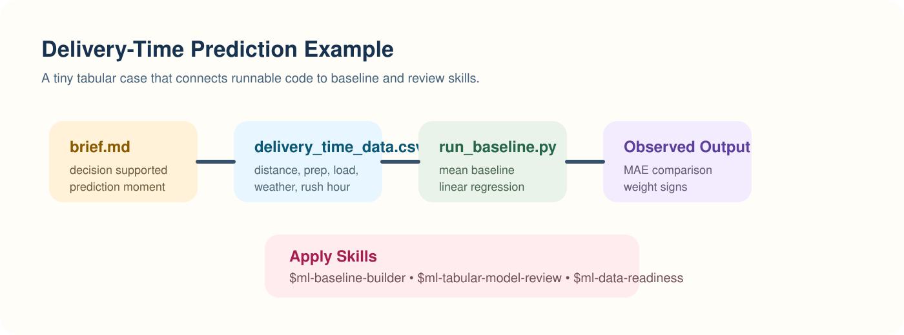
Sample output snapshot:
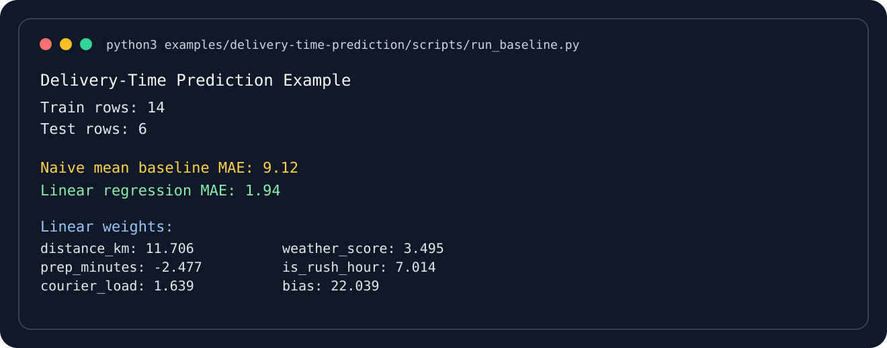
What happens:
- the script loads a tiny CSV dataset
- splits train and test rows
- computes a naive mean baseline
- fits a small linear regression baseline
- prints MAE and learned weights
Observed run artifact:
examples/delivery-time-prediction/artifacts/run-output.txt
Skills this supports:
Example 2. Knowledge Search Retrieval
Folder:
examples/knowledge-search-retrieval/
Files:
data/documents.csvdata/queries.csvartifacts/brief.mdartifacts/run-output.txtscripts/run_retrieval_eval.py
Run it:
python3 examples/knowledge-search-retrieval/scripts/run_retrieval_eval.py
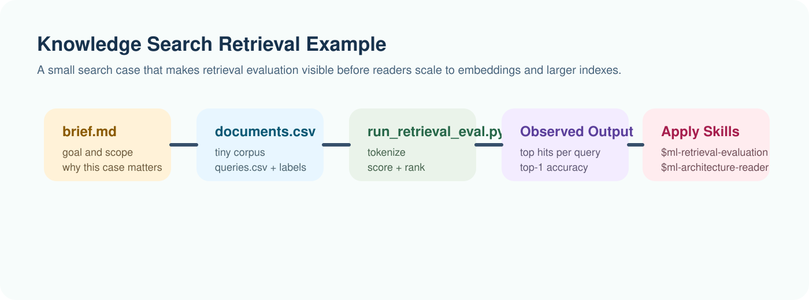
Sample output snapshot:
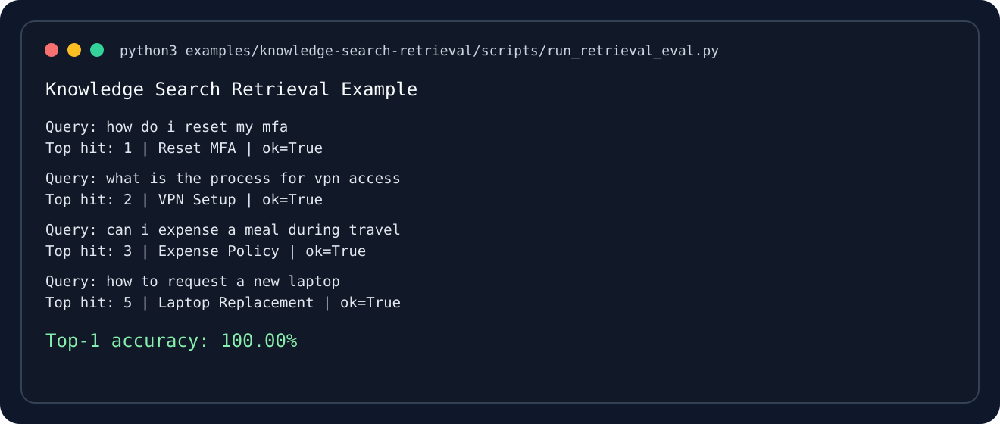
What happens:
- the script loads a tiny document set
- scores each document against each query with a simple lexical similarity method
- prints the top hit per query
- reports top-1 accuracy
Observed run artifact:
examples/knowledge-search-retrieval/artifacts/run-output.txt
Skills this supports:
Recommended Reader Workflow
- Run the script first.
- Read the small artifact brief.
- Invoke the corresponding skill with the observed outputs.
- Compare your own judgment with the skill’s structure.
- Modify the dataset or script and rerun.
That sequence demonstrates the book’s main idea: the reader should not only consume explanations. The reader should execute a case, inspect evidence, and use a reusable skill to reason about what happened.
If you want the exact skill workflow, use How to Use Reader Skills with This Book together with Appendix B. Reader Skill Catalog.
Why This Is Video-Ready
This structure is a strong foundation for an AI-driven course video.
Each runnable case already gives you:
- a story frame
- an artifact brief
- a process figure
- a real command to execute
- a screenshot-like output asset
- a skill-based interpretation layer
That is almost the full storyboard for a teaching video.
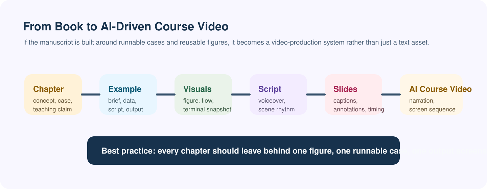
For later video production, each chapter should aim to leave behind:
- one visual concept figure
- one runnable example
- one screenshot or terminal snapshot
- one reusable skill prompt
- one short voiceover outline
Appendix D. From Book to AI-Driven Course Video
Turning this book into an AI-driven course video is a very good idea.
The book is already unusually suitable for it because the manuscript is not only conceptual. It has:
- recurring real cases
- reusable skills
- runnable examples
- process figures
- screenshot-like outputs
That means the book can become a production system for a course, not only a script source.
Course Workspace
The repository now includes a dedicated production workspace for the full course:
books/machine-learning-full-course-by-ai/course
Inside it, each of the 16 chapters has its own folder with:
lesson-outline.mdvoiceover.mdscene-cards.mddemo-commands.mdassets/README.md
The book also includes a Course Workspace Guide so readers can find the production layout from the HTML version.
At the repository level, the course workspace now also includes:
course/production-checklist.mdcourse/youtube-release-plan.md- generated
assets/title-card.svgfiles for all 16 chapter folders
Recommended Unit Structure
For each chapter video, use this sequence:
- Start with the real problem or case.
- Show one clean process figure.
- Show the small runnable example or artifact pack.
- Show the observed output or screenshot.
- Apply the corresponding skill.
- End with the judgment takeaway and one reflection question.
This is stronger than lecture-only video because the viewer sees:
- the input
- the process
- the result
- the reusable reasoning structure
Whole Course, Not Only A Few Videos
If the final goal is one complete YouTube course, then yes: every chapter should eventually have a video role.
The right way to think about it is:
- the book is the master curriculum
- each chapter becomes one lesson or one lesson cluster
- the final YouTube course is the assembled sequence
That is better than choosing random highlight videos after the book is done.
Proposed Full Course Structure
Part 1. Foundations and Learning Method
- Chapter 1: Learn Machine Learning Through Harness Engineering
- Chapter 2: Math Without Losing Courage
- Chapter 3: Data, Labels, and Problem Framing
Part 2. Classical Models and Evaluation
- Chapter 4: First Models: Linear Models and Nearest Neighbors
- Chapter 5: Trees, Ensembles, and Strong Baselines
- Chapter 6: Evaluation, Error Analysis, and Experiment Design
Part 3. Training and Modern Modeling
- Chapter 7: Optimization and Representation Learning
- Chapter 8: Neural Networks in Practice
- Chapter 9: Sequence Models, Attention, and Transformers
- Chapter 10: Transfer Learning, Fine-Tuning, and Foundation Models
Part 4. Retrieval, Ranking, and Systems
- Chapter 11: Unsupervised Learning, Embeddings, and Retrieval
- Chapter 12: Recommendation, Ranking, and Decision Systems
- Chapter 13: Data Engineering for ML Teams
- Chapter 14: Training, Serving, and MLOps
Part 5. Responsibility and Growth
- Chapter 15: Responsible AI, Safety, and Human Feedback
- Chapter 16: From Learner to Professional ML Engineer
Bonus Videos
- Appendix A: Capstone Blueprints
- Appendix B: Reader Skill Catalog
- Appendix C: Runnable Example Cases
What Every Chapter Video Needs
Each chapter does not need the same type of demo, but each one should have:
- one real teaching case
- one visible process figure
- one on-screen artifact, command, or output
- one key skill or harness
- one takeaway sentence
For some chapters, the on-screen artifact may be code. For others, it may be:
- a metric table
- a data schema
- a model diagram
- a rollout checklist
- a risk memo
- a growth memo
That still counts as a real video lesson.
Minimal Visual Pack Per Chapter
Each chapter should leave behind:
- one figure that explains the process
- one screenshot that shows evidence or output
- one chapter cover or anchor visual
- one short artifact or command view
If you maintain that discipline, later video assembly becomes much easier.
Good Course Production Pipeline
- Use the chapter text as the knowledge base.
- Use the runnable example as the demo spine.
- Use the figure as the explanation spine.
- Use the skill as the judgment spine.
- Generate a short voiceover draft from those assets.
- Build slides or scene cards from the figures and screenshots.
- Produce the AI-narrated or AI-assisted video.
What To Capture Next
The next best assets to prepare after the book are:
- one cover image per chapter
- one process figure per chapter
- one screenshot per runnable or artifact-based case
- one short narration outline per chapter
- one summary slide per chapter
Suggested Recording Style
Because you want to record the book and teach with voice narration, I recommend this style:
- Do not read the chapter verbatim.
- Treat the chapter as the source script and lesson design document.
- Record each lesson around one case and one visible artifact.
- Use your narration to connect: problem -> process -> result -> judgment
That will feel like a real course, not an audiobook with slides.
Practical Narration Rhythm
For a typical 8 to 15 minute lesson:
- Hook with the case in 20 to 40 seconds.
- Explain the key concept with one figure.
- Show the example artifact or command.
- Show the output or screenshot.
- Apply the skill or harness.
- Close with one engineering lesson and one exercise.
What I Have Already Executed
The runnable example scripts have been executed and their outputs are saved in the repository:
books/machine-learning-full-course-by-ai/examples/delivery-time-prediction/artifacts/run-output.txtbooks/machine-learning-full-course-by-ai/examples/knowledge-search-retrieval/artifacts/run-output.txt
That means the book already contains not only commands, but also real observed results that can be shown in later video production.
Practical Recommendation
Do not wait until the book is completely finished to think about video.
Instead, make the manuscript video-ready as you go:
- when you add a runnable example, also add its screenshot
- when you explain a workflow, also add its figure
- when you define a skill, also note what on-screen evidence would demonstrate it
That habit will make the later AI-driven course dramatically easier to produce.
Course Workspace Guide
This page is the bridge between the book manuscript and the video-production workspace.
If Appendix D explains why this book can become a strong AI-driven course, this page shows where the practical production assets live.
What Is Already In The Repository
The repository already contains:
- the full mdBook manuscript
- runnable example cases
- reader skills the audience can try
- a dedicated
course/production workspace - generated chapter title cards for all 16 lessons
Directory Map
books/machine-learning-full-course-by-ai/
├── src/
│ ├── video-course.md
│ ├── course-workspace.md
│ └── assets/course-covers/
├── examples/
├── scripts/
│ └── generate_course_title_cards.py
└── course/
├── README.md
├── production-checklist.md
├── youtube-release-plan.md
└── chapter-xx-.../
├── lesson-outline.md
├── voiceover.md
├── scene-cards.md
├── demo-commands.md
└── assets/title-card.svg
Production References
Use these files as the operating documents for course creation:
course/README.mdcourse/production-checklist.mdcourse/youtube-release-plan.md
Use these book chapters as the teaching source:
- How to Use Reader Skills with This Book
- Appendix B. Reader Skill Catalog
- Appendix C. Runnable Example Cases
- Appendix D. From Book to AI-Driven Course Video
Sample Title Cards
These title cards are generated assets that can be used directly in editing software or refined into thumbnails.
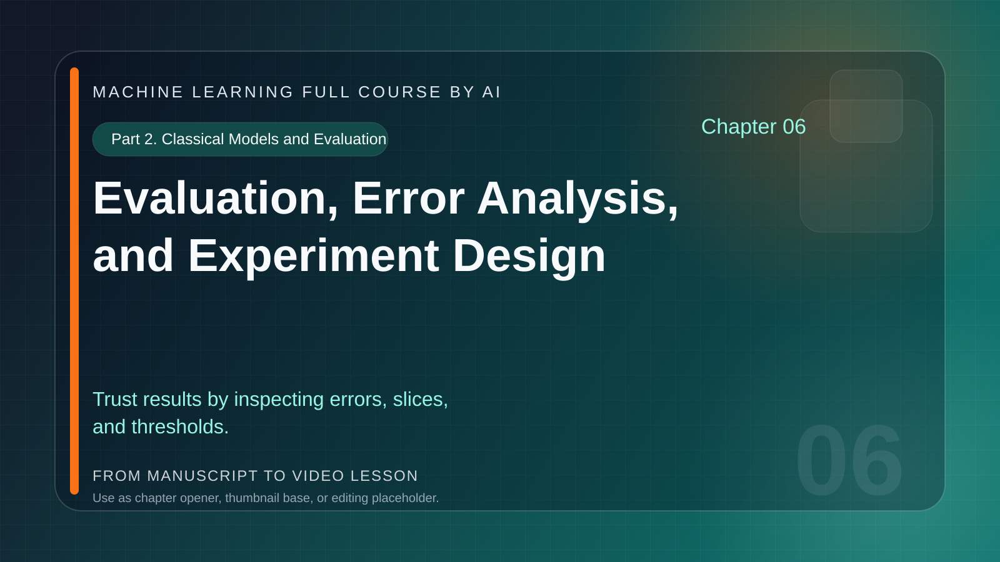
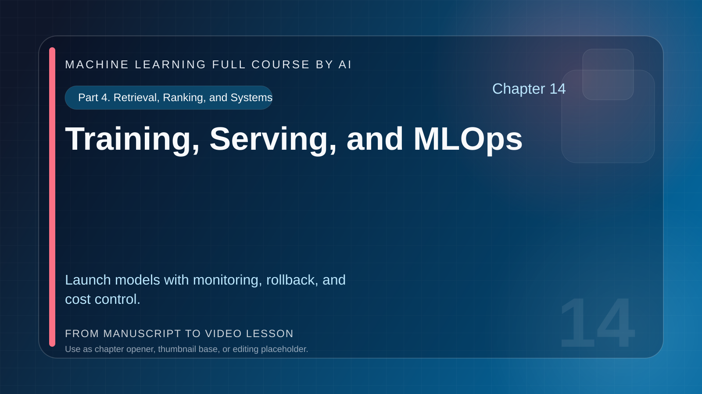
Sample Process Figures
Each chapter now also has a generated process figure based on the lesson outline and teaching flow.
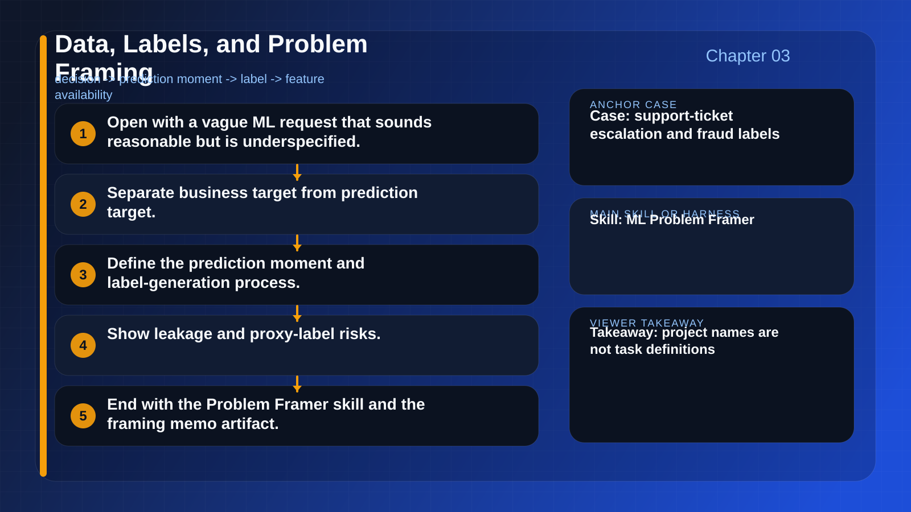
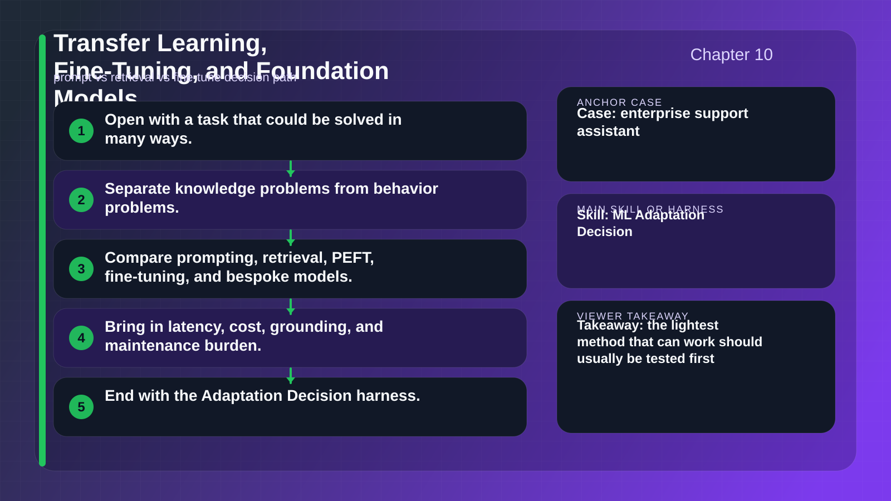
Sample Evidence Panels
Each chapter now has an evidence panel that turns the lesson’s demo command or skill prompt into a visual capture target.
For the runnable chapters, the evidence panel includes real saved outputs from the repository.
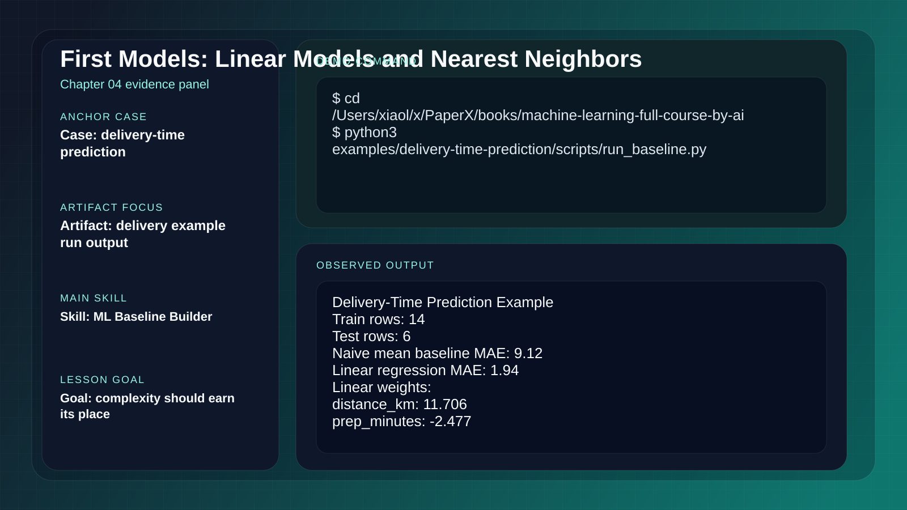
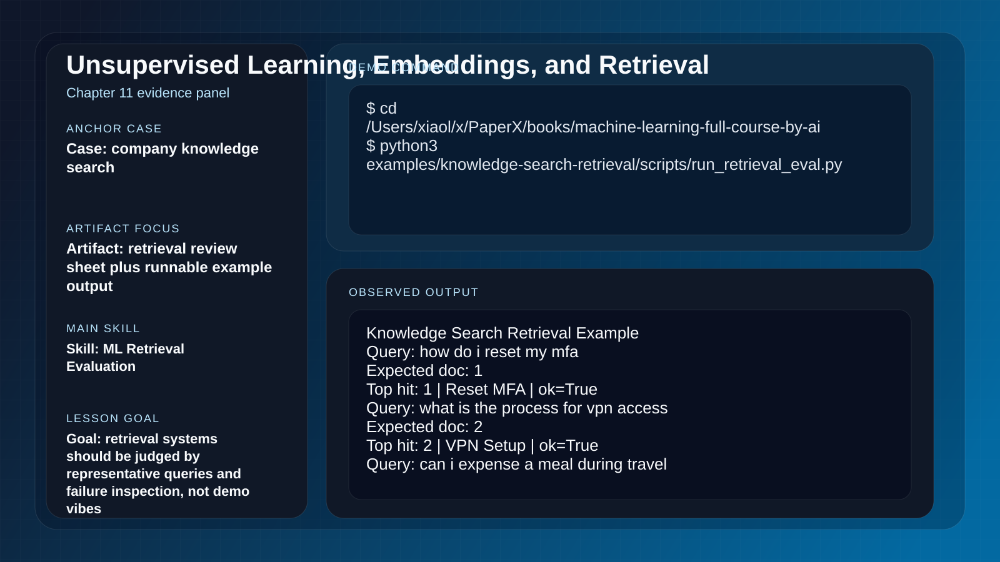
How To Use The Workspace
For each chapter:
- open
lesson-outline.mdto confirm the teaching goal - refine
voiceover.mdinto spoken narration - use
scene-cards.mdto plan the visual sequence - re-run
demo-commands.mdand capture evidence - place figures, screenshots, and chapter visuals into
assets/ - check the lesson against
course/production-checklist.md
Regenerating Chapter Title Cards
If you rename chapters or want to restyle the course covers, run:
cd books/machine-learning-full-course-by-ai
python3 scripts/generate_course_title_cards.py
This updates:
course/chapter-xx-.../assets/title-card.svgcourse/chapter-xx-.../assets/process-figure.svgcourse/chapter-xx-.../assets/evidence-panel.svgsrc/assets/course-covers/*.svgsrc/assets/course-process/*.svgsrc/assets/course-evidence/*.svg
Why This Matters
The goal is not only to have a finished book.
The goal is to have a repository where a reader can:
- study the chapter
- run the example
- try the skill
- inspect the evidence
- watch the lesson version later
That is what makes this project suitable for the future of learning rather than only for static reading.
References
This page points to the canonical bibliography used across the manuscript.
Core Books
- Christopher M. Bishop, Pattern Recognition and Machine Learning
- Kevin P. Murphy, Probabilistic Machine Learning: An Introduction
- Trevor Hastie, Robert Tibshirani, and Jerome Friedman, The Elements of Statistical Learning
- Ian Goodfellow, Yoshua Bengio, and Aaron Courville, Deep Learning
- Chip Huyen, Designing Machine Learning Systems
Representative Papers
- “Adam: A Method for Stochastic Optimization”
- “Deep Residual Learning for Image Recognition”
- “Attention Is All You Need”
- “BERT: Pre-training of Deep Bidirectional Transformers for Language Understanding”
- “Hidden Technical Debt in Machine Learning Systems”
Editorial Note
The book favors durable references and foundational papers. Fast-moving tools will be discussed through principles and workflows so the material remains useful when frameworks and model APIs change.